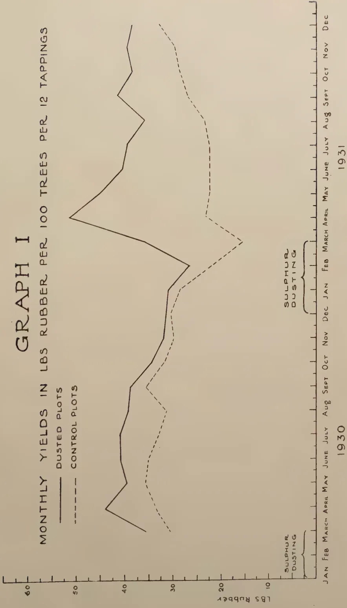
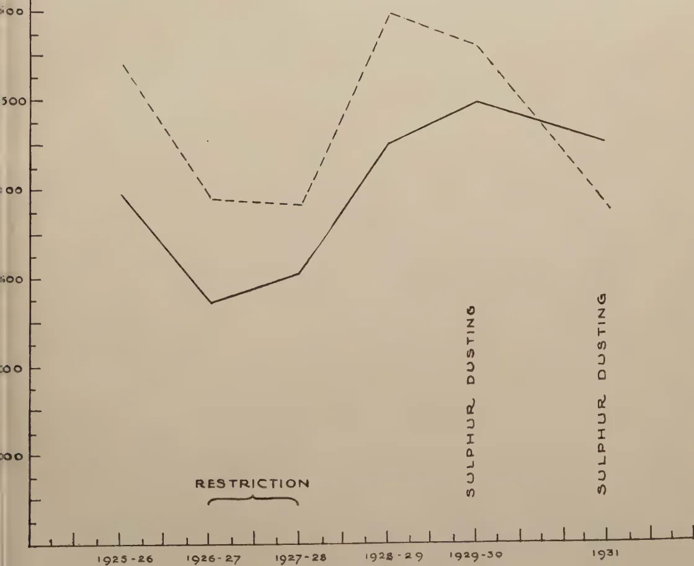

February, 1932
AGRICULTURE was at one time, and is still by some, erroneously regarded as an industry whose ills could be cured by the administration of some treatment prescribed by the chemist. An analysis of the soil it was thought enabled one to supply the missing elements and make it productive. The chemist himself, however, recognises more than anyone the limitation of his abilities and the necessity for close collaboration with others versed in the science of living things just as he is in that of the dead ones. Unfortunately before the chemist can apply his methods of analysis to living substance he must perforce first kill it. The study of the influence of other living organisms and their physiological products, excretions and secretions, in the raising of commercial crops is one aspect of the work of the biologist. Apart from agricultural entomology and mycology there are other biological factors that enter into crop production that must be studied from the view of the living plant and it is often the failure to realise this that leads to disappointment in results. Indeed one may emphasise that it is the whole life of the plant and not simply the desired end result that requires attention. There is no doubt that simple unicellular organisms, be they bacterial, animal, or plant, play a far greater influence upon soil fertility than has been fully demonstrated and it is possible that in this field, as yet but little explored, will at a future date come some of the most far-reaching discoveries capable of aiding agricultural practice. The field is a wider one than it may at first sight appear.
A statement made in the recently published Annual Review of Agricultural Operations in India, if fully confirmed and subjected to further investigation, may afford new light upon the
66physiological problems of the rice plant, and perhaps offer an unexpected method for the increase of this crop. This statement announces the discovery of the occurrence of nitrogen fixing bacteria within the roots of the rice plant. "Bacteria from inside the roots of rice plants were grown in culture solutions containing sugar and minerals but free from nitrogen; slimy bacterial growths were observed, anaerobic conditions favoured their development and microscopic examination revealed the presence of characteristic capsulated bacteria. The assimilation of nitrogen from the air was confirmed by analysis." This assimilation or fixation of atmospheric nitrogen was greater than that of the nodule bacteria of leguminous plants. The fixation of atmospheric nitrogen by bacteria associated with leguminous crops is a well known fact and one upon which our knowledge, although by no means complete, is well established. By utilising this knowledge the lucerne crop in England has in recent years been grown on a greatly increased acreage.
That it was possible to supply growth promoting substances stimulating cereal crops and produced by bacteria was at one time strongly advocated by Bottomley. It was however, in their case held to be not proven. With advance in our knowledge it seems probable that such line of attack upon the problem of crop production much more generally will be a most fertile one.
Not only do we want fuller information concerning the physiological influence of unicellular organisms upon crop plants but there are many other biological problems requiring elucidation. The influence of cover crops upon crop production is a biological study which merits much wider field observation as the Chemist to the Tea Research Institute points out in the last number of its journal. Cover crops in Ceylon have so far been most successfully used in connexion with tea and rubber, both crops whose commercial products are other than their fruits and with other than a superficial root system. The use of cover crops in coconuts and other plants requires observation and a far fuller knowledge of their competitive action and the possibilities of its seasonal control are awaited before it can be widely advocated. The mysterious virus diseases of plants of which only in recent years we have had any suspicion of their existence are now amongst us in our bananas, sugar cane, tobacco, and pineapples and they may appear at any day in others of our crops. Our knowledge of the cause and transmission of these diseases is at present a great blank which only biological study can fill.
67SECTION VIFUNGUS DISEASES AND GREEN MANURINGMALCOLM PARK, A.R.C.S.
GOVERNMENT MYCOLOGIST
A consideration of fungus diseases and green manuring falls roughly into two main heads, firstly, of green manure crops and their relation to diseases of the main crop plants and, secondly, of diseases of the green manure crops themselves. It must be borne in mind that, provided that diseases of green manure plants are not of a severity sufficient to prevent them functioning as such and provided that such diseases are not passed on to the main crop plants for the benefit of which the green manure plants are grown, the diseases of green manure plants are of relatively little importance. It is possible that the perusal of a list of diseases of certain groups of plants might give the impression that such plants are often and severely attacked by disease and that their presence may constitute a danger. It would be as well, therefore, to point out at the beginning of this section that the value of green manuring is so great as to warrant amply the adoption of measures to control serious diseases of the green manure plants and to prevent the main crop plants from suffering unduly from disease as a consequence of their presence. Such measures must be, of necessity, simple and inexpensive. If one form of green manure plant is found to be unsatisfactory on account of disease it is often possible to replace it with another plant equally satisfactory as a green manure and less susceptible to the disease in question.
It is proposed to consider chiefly green manures and their relation to disease in the main crop plants in which they are grown and to give brief notes only on the diseases of the green manures themselves.
Root Disease.—All woody plants are susceptible to root disease and green manure trees and shade trees are no exception to this rule. The extent of attack and the rapidity of death after attack vary in different plants and under different conditions. Generally speaking, root
68diseases flourish in damp situations and in good soils and kill with greater rapidity trees with soft, easily penetrated roots. The common fungi associated with root disease such as Fomes lignosus, Fomes lamaicensis, Poria hypolateritia and Rhizoctonia bataticola are known to occur on a great variety of host plants although there seems to be a certain preferential association of certain plants and certain root diseases, for instance, Hevea and Fomes lignosus, tea and Poria hypolateritia, and Cacao and Fomes lamaicensis. This may not be so much a question of individual susceptibility as of conditions prevailing which are most favourable for the development and parasitism of individual fungi. There is no indication of unusual susceptibility to root disease in any of the green manure and shade trees commonly grown in Ceylon while, as far as is known, none of them are immune.
It is, therefore, obvious that, while they are growing, green manure and shade trees do not constitute a danger, as far as root disease is concerned, to the crop plants in which they are grown. It has been the practice, however, to cut out such trees periodically for firewood, or when the trees become inconveniently large; if the stumps and roots are left in the ground then the root disease question assumes a greater importance. Petch(1) has pointed this out and says:
“In old tea, the chief source of root disease lies in the stumps of shade trees which have been felled. Grevillea robusta is a notorious offender in this respect, and its stumps very frequently give rise to Ustulina, or, more rarely, to Brown Root disease. When Grevilleas have to be got rid of, their stumps should be dug out. Jak (Artocarpus integrifolia) and Dadap (Erythrina lithosperma) have been found to serve as a starting-point for Fomes lignosus. Albizzia moluccana is one of the most difficult shade trees to deal with in connection with root diseases, and one is inclined to recommend that it should never be planted through tea. Owing to its rapid growth, it usually gets out of hand in a few years, and, in certain of the low-country districts of Ceylon, trees with trunks 4 feet in diameter were formerly not uncommon in tea. When cut down, its stumps very generally afford a place of origin for Ustulina, Diplodia, and Poria, and large numbers of bushes are killed out round them. With regard to these common shade, or green manure, trees of tea, it might almost be said that from their stumps root disease is the rule rather than the exception.”
The same applies to stumps of green manures or shade trees when left in the soil among other woody crops, such as cacao or rubber. The reason why deaths from root disease
69should occur round stumps is not quite clear. Butler(2) in his report on diseases of tea in Nyasaland states:
“As the stumps decay, patches of dying tea are noticed around them, and these may continue to expand for a considerable period unless arrested. I have not seen an adequate explanation of this phenomenon, through the immediate cause of the death of the bushes—the action of certain parasitic fungi which attack the root—is well known. How it is that these fungi require the presence of decaying wood, usually in large masses, to start them into activity is obscure.”
A possible explanation is that the air-borne spores of the root disease fungi find in the decaying stumps conditions most favourable for their germination and development.
Danger from root disease caused in this way can be avoided by removing the stumps when felling green manure trees. When the trees have been allowed to grow to a considerable size this is a difficult and costly operation. The modern tendency in estate practice is to remove shade trees before they become large enough to be troublesome. This is particularly applicable to albizzias and dadaps at low and mid-country elevations. Sometimes, when trees, e.g., grevilleas, are grown for firewood in addition, it is more practicable to leave them longer and to exert care in removal. In this connection it is perhaps worthy of note that certain ‘tree-killers’ are on the market, the proprietors of which claim that the roots of trees killed by them are impregnated with poison and in consequence do not harbour parasitic fungi. A ‘tree-killer’ is being tested now; so far results show that trees to which the poison is applied die more quickly than those which are ringed in the usual way, but a considerable period of time must elapse before any useful data can be obtained on the effect on the roots. If the claims are substantiated the danger of root disease originating from stumps and roots left in the ground will be lessened by using the ‘tree-killer’.
In addition to the green manure and shade trees there are erect covers such as Tephrosia candida and Crotalaria spp. which become woody with age and, when woody, may be attacked by the common root diseases. Green manure plants of this type are lopped periodically and after about two years branches may die back and act to a lesser degree in a manner similar to the stumps referred to above. Tephrosia candida, if left too long, is susceptible to a root disease caused by Irpex subvinosus which from this source has been known to pass to and attack tea. Erect green manure plants should therefore be removed
70and replanted periodically. The stumps must be removed completely—an operation not very difficult if two years is the limit of time they are allowed to grow.
Green manures have yet another bearing on the incidence of root disease in woody crop plants. Murray (3) pointed out that a thick cover of vigna (Dolichos Hosei) produces conditions favourable for the rapid spread of Fomes lignosus in rubber. Although vigna is not attacked by the fungus, the moist conditions prevailing under the cover produced by the plant favour the activity of the fungus, while the older runners of the plant act as convenient footholds for the strands of mycelium which pass along them. Similar conditions occur when other cover crops are grown, and cover plants when allowed to grow up the base of trees may conceal fructifications or decaying tissue and thus aid the spread of root disease by preventing prompt treatment. A sound recommendation is that the cover plants should be cleared away to a distance of about 3 feet from the base of the trees. In addition to this, where root disease occurs, the area containing affected and suspected trees should be completely cleared and kept clean weeded; isolation trenches should be kept clear of cover plants.
There remains a consideration of green manures and their relation to root disease in herbaceous plants. It is unusual for green manure plants to be grown simultaneously with herbaceous crops, but it is a common practice to turn in leguminous or other green manure plants prior to growing the main crop. Gadd and Bertus (4) noted the occurrence of Rhizoctonia Solani (Corticium vagum) on vigna and other cover plants and showed by experiment that the fungus was capable of attacking a very large range of plants in the seedling stage. Weir (5) drew attention to diseases of cover crops grown under rubber in Malaya caused by Rhizoctonia Solani, Sclerotium Rolfsii and Pythium sp. The two former are sclerotial fungi and produce resting bodies or sclerotia which are capable of germinating in soil after long periods. The presence of these fungi on the green manure plants and the subsequent infection of the soil when the green manure plants are mulched into the soil might lead to heavy losses of main crop plants soon after germination. It should be pointed out that not only do these fungi attack and kill herbaceous plants such as tobacco, brinjal and chilli, but they are parasitic on young seedlings of tea and rubber and other plants which subsequently become woody. The need for eradication of diseases of the cover crops as soon as they appear and the need for care in avoiding infection of the soil by this type of fungus is therefore of importance. The question of control will be considered later in the notes on the diseases of green manure plants.
71Although certain parasitic fungi may be introduced into the soil in green manuring this infection can be avoided with a little care. It is possible that with certain diseases actual benefit may be derived from green manuring in the suppression of disease. Millard and Taylor (6) have shown that the prevalence of potato scab (Actinomyces scabies) is decreased by green manuring. They suggested that green manuring may encourage the growth of saprophytic organisms with the result that parasitic organisms are suppressed. It will not be out of place to state again that the benefits derived from green manuring are such as to justify amply the adoption of a little care in controlling any root diseases that might be encouraged by, or introduced in, the process.
Stem diseases.—There are two stem diseases of woody green manure plants which also attack main crop plants in Ceylon. Pink disease (Corticium salmonicolor) has been recorded on Glicidia maculata, Crotalaria spp. and Desmodium heterocarpum, while the alga, Cephalearos parasiticus, has been found to attack boga (Tephrosia candida). The former of these diseases has been known on tea and rubber although on neither is it a serious disease in Ceylon, while red rust is common on tea and has occurred on cinnamon, coffee, and rubber. There is no indication that green manure plants are more susceptible to these diseases than the main crop plants on which they have been known to occur and their eradication from the green manure plants is relatively simple.
It is possible that the presence of cover crops may affect the incidence of certain stem diseases of the trees under which they are grown by increasing the humidity of the atmosphere. There is no record of the increase of such diseases as bark rot or stem canker of rubber where cover crops are grown, but diseases of this type are favoured by humid conditions and it is conceivable that a thick cover of vigna or some similar green manure plant might, by increasing the humidity, tend to increase the incidence of these diseases. This is, however, unlikely ever to become important in Ceylon where effective preventive application of disinfectants is the common practice.
Leaf disease.—It is in connection with leaf disease that the planting of certain green manure trees affects intimately the incidence of disease in the crop plant. Cercospora Theae is considered to be the most serious disease of tea grown in a wet climate at high elevations. The incidence of this disease is directly correlated with the growth of certain shade trees, particularly of Acacia decurrens, under such conditions. Petch (loc. cit.) showed that the disease first attacks acacias and spreads from them to the tea. He pointed out that, usually, the disease
72occurs on tea interplanted with Acacia decurrens, but that it also attacks Acacia dealbata, Acacia melanoxylon, karri (Eucalyptus diversicolor), and red gum (Eucalyptus robusta). Gadd (7) extended the host range of Cercospora by including Albizia lopantha. Petch (loc. cit.) described the progress of the disease thus:
“When Acacia decurrens is attacked, the trees are defoliated, the leaflets and the leaf-stalk, or rachis, falling separately. The smaller branches may die back, and young plants may be killed, but, in general, the trees put out new foliage when drier weather supervenes.
“The disease is conveyed from the Acacias to the tea, either by means of its spores which are blown by the wind, or washed by the rain, on to the surrounding bushes, or by the falling leaflets of the Acacia. As the leaflets are small and flat, they adhere, when moist, to the leaves of the tea bush long enough to enable the fungus to grow from them to the tea leaf. It is easy to find in an affected field numerous instances in which an Acacia leaflet is attached to a tea leaf by a web of mycelium in the middle of a diseased patch, and others in which a spot is beginning to form from a similarly attached leaflet. In general, it would appear that the smaller circular spots are the result of an infection by spores, while the larger patches are due to the transference of the fungus by means of the falling Acacia leaflets, but that is not universally the case. Naturally, when the disease is transferred by a leaflet, the mycelium is superficial on the tea leaf from the beginning of formation of the spot.”
The disease occurs only in the areas of tea which are subject to conditions of high humidity and particularly in those areas where mists are prevalent. Areas of tea which are not in the ‘mist zone’ but which get the same amount of rainfall as those nearby but within the ‘mist zone’ are not affected to nearly the same extent as the latter. It is obvious, therefore, that the areas of tea in Ceylon which are subject to severe attacks of Cercospora are not very great. It is unfortunate that, at the elevation at which the disease is most severe, the number of shade and green manure trees which grow satisfactorily is extremely limited and that, of these, Acacia is certainly the best. Whether it is advisable to cut out the acacias in those areas in which the disease occurs is a question which must be dealt with in the light of experience on each estate. In some instances it will be found that the damage caused by the disease more than balances the benefit obtained in green manuring and shade from the acacias. From such areas the trees should be removed. The disease occurs during definite seasons and it might be possible to avoid serious infection by lopping the acacias prior to
73those seasons. Meanwhile, endeavours should be made to find a green manure and shade tree immune to Cercospora which could replace the acacias.
There are no other leaf diseases of economic plants which have been shown to be correlated in any way with the presence of green manure plants. It should be pointed out, however, that Centrosema pubescens is attacked by an Oidium which is similar in morphological characters to that which attacks Hevea. It is not possible to state if it is the same species nor has the fungus been proved to be capable of attacking Hevea. Even if it were, it is unlikely that the presence of the fungus on the cover crop would affect the severity of attack on Hevea since, in those areas in which Oidium occurs on rubber, the fungus is usually present to such an extent on the rubber that its occurrence on the cover crop would make little difference.
A large number of diseases of green manure plants have been recorded in Ceylon, but with very few exceptions, they do not constitute a limiting factor to the growth of these plants. Certain diseases, however, have proved to be troublesome and for that reason are dealt with at some length below:
Sclerotial diseases of cover crops.—The two chief organisms causing diseases under this head are Rhizoctonia (Corticium) Solani and Sclerotium Rolfsii and of these the former has proved to be much more common on estates in Ceylon. Wier (loc. cit.) has reported Rhizoctonia Solani on Calopogonium and vigna in Malaya, while in Ceylon it is common on vigna, cowpea and Dunbaria Heynei.
The effects of the two diseases are somewhat similar. Brown and roughly circular patches occur in the cover ranging in diameter from a few inches up to several yards. These patches are particularly noticeable in areas in which the cover is well grown, since affected areas are somewhat sunken below the general level of the cover. Outbreaks occur most commonly during wet weather. The two diseases differ when examined closely and are therefore described separately.
Rhizoctonia (Corticium) Solani.—On a close examination of a patch of vigna attacked by Rhizoctonia (Corticium) Solani the majority of the leaves, particularly of the lower ones, may be seen to be rotting and bound together by webs of cobweb-like mycelium which can be traced readily on most of the affected leaves and stems. Loosely attached to diseased stems and leaves near the ground are found the sclerotia or resting bodies of the fungus. In appearance sclerotia are not unlike
74fine gravel or small soil fragments and range in size from 0.5 to 4 mm. in diameter. Sclerotia are very resistant to adverse conditions and serve to tide the fungus over periods of drought and, being but loosely attached, they are readily dropped into the soil. By these the fungus is carried over from wet season to wet season.
The perfect (Corticium) stage of the fungus has been observed but rarely on vigna in Ceylon. It occurs on green stems and on the under surface of green leaves in, or adjacent to, affected areas as a white or greyish powdery layer. This layer can be removed entirely with the point of a needle and consists of a basal network of loosely woven hyphae from which spring basidia on the apex of each of which are borne four hyaline, oval, apiculate spores. It is interesting to note that the leaves on which this stage of the fungus is formed are not injured by the fungus and appear to act merely as supporting surfaces for the spore-bearing mycelium. The spores measure 7-12 by 4-6 microns.
Sclerotium Rolfsii.—Sclerotium Rolfsii has been recorded in Ceylon on vigna and Crotalaria but is common on neither. It is, however, common in tropical and sub-tropical regions and may cause serious losses of herbaceous garden and field crops. Bertus (8) has written a full account of its occurrence in Ceylon and has shown that it is capable of attacking a wide range of herbaceous plants. The growth of the fungus on infected plants is characteristic. Strands of white mycelium occur on affected stems and these on reaching the leaves may spread into silky fan-shaped growths of hyphae. Attached lightly to the mycelium and to dead stems and leaves are found sclerotia which are at first white and then yellow-brown, spherical, smooth and shining and 1-1.5 mm. in diameter, similar in appearance to mustard seed. The functions of these sclerotia are as described above and these again are capable of remaining viable for long periods under dry conditions. No perfect or spore-bearing stage of Sclerotium Rolfsii has been observed.
Treatment.—The ideal control measure for all soil-inhabiting parasitic organisms is that of soil sterilisation. This, however, is impracticable under field conditions. It is essential that measures for the control of diseases of green manure plants in general should be cheap and efficacious. In Malaya, Weir (loc. cit.) has recommended the isolation of patches affected by these fungi by means of a trench 18 inches deep and the treatment of the enclosed area with a soil fungicide. He points out that fungi of the type under discussion do not penetrate the soil to any great depth and emphasizes the need of keeping the trenches clear.
75In Ceylon, the general recommendation is the collection of all affected plants within an area, together with a border of apparently healthy plants—a border 3 feet wide all round the patch should suffice. It is important that the plants collected should be burned within the patch if possible and the surface soil of the patch should be scraped lightly together and heated by the fire in order to kill the sclerotia of the parasite which have fallen on it. If burning within the area is impracticable the dead plants, together with the soil scrapings, should be taken away in tins or some similar receptacles since there is otherwise a danger of dropping sclerotia and infecting other areas during the transportation to the place of destruction. Treated patches should be kept clean for a period of at least one year.
In those areas in which the burning of diseased plants in situ is not practicable, the recommendation made in Malaya of applying disinfectants might be adopted. The ground should be cleared as above and a liberal application (1 quart per square foot) made of a two per cent solution of formalin, a one per cent solution of blue vitriol (copper sulphate) or Jeyes' fluid at the rate of 1 ounce Jeyes' fluid to one gallon of water.
Dying back of shade and green manure trees.—From time to time numerous requests for advice have been received concerning the dying back of certain shade and green manure trees—particularly of dadaps and grevilleas. That such trouble is wide-spread was made clear by the answers to the questionnaire on green manuring recently circulated to estates in Ceylon. The diseases of dadaps and grevilleas are distinct and are discussed briefly below.
Dadap.—There are two diseases of dadap which result in dying back. One is caused by Fusarium sp. and has been described by the writer (9), while the other results from eelworm injury in the roots and has been described by Gadd (10).
Fusarium die-back.—The disease occurs after lopping. Green-brown or olive water-soaked blisters appear on the cortex of lopped branches and as the disease advances these may amalgamate and finally dry out to become characteristic sunken areas of dead cortex, brown in colour. The lenticels of the area affected develop pinkish-white pustules of spores of the causal fungus. The disease is most active in wet weather and occurs in the Uva district and, to a lesser extent, in other up-country districts. When grown in situations favourable for their growth, young vigorous trees are not affected seriously by the disease. Old trees, after repeated loppings, and trees in exposed situations and grown under unfavourable conditions may suffer extensively, while the time of lopping appears to influence the severity of attack.
76The dadap, like certain other trees used for the same purpose, has a limited economic life since after repeated loppings it becomes increasingly susceptible to disease. The common estate practice is to replant when trees become unthrifty. The age at which trees should be removed and replanted varies in different districts but usually lies between ten and fifteen years. The replanting of dadaps as soon as they begin to show symptoms of degeneration and increasing susceptibility to disease, and lopping only at times when the trees are at the beginning of a period of vigorous growth, i.e., when the sap is running, will tend to minimise the possibility of extensive Fusarium die-back.
Eelworm disease.—Eelworm disease of dadap is common in certain districts in Ceylon, particularly Maskeliya, at an elevation above 4,000 feet. Affected trees show poor growth, the leaves being undersized, pale in colour and few in number. Lower leaves fall off prematurely and in advanced cases branches die back, the trees having, in consequence, a thin and unthrifty appearance. The most typical symptom is the crowded state of the leaf scars on the shoots of affected trees, which is the result of suppression of normal growth followed by defoliation. An examination of the roots of such trees shows galls typical of nematode infestation in both large and small roots. The galls vary in size and are easily distinguishable from the nodules caused by nitrogen-fixing bacteria which are more or less spherical, easily detached and present only on the smaller roots. Eelworm galls are enlargements of the roots themselves and when cut open the female nematodes may be seen as glistening white or pearly white, rounded, pear-shaped bodies about half the size of a pin's head. The general effect of the root infestation is the lowering of the vitality of the trees and the consequent increase in susceptibility to fungus attack and to unfavourable conditions.
The eelworm is known as a serious parasite of tea seedlings and has been known to attack roots of old tea, although not commonly. Dadaps affected by eelworms should therefore be treated. No satisfactory method other than some form of soil sterilisation has been evolved for the control of eelworm. In areas in which eelworm disease occurs dadaps should be removed as completely as possible and the roots burned and some other form of shade or green manure tree established.
Grevillea.—The elevation to which grevilleas can be grown in Ceylon is limited and as the upper limit is approached a die-back is common on trees of over ten years of age. That this die-back is affected by adverse conditions is shown where exposed trees on poor soil exhibit the die-back symptoms, while
77older trees in the same or adjoining fields, grown under more favourable conditions, do not exhibit the symptoms. Trees die from the top slowly and a close examination of the portions dying back and of the roots fails to disclose any parasitic fungus. As the die-back advances it may be accompanied by a gummosis, the bark cracking vertically and gum exuding; in extreme cases the trees die and an examination of the roots reveals the presence of the fungus, Rhizoctonia bataticola. How far this fungus is responsible for the die-back it is impossible to say, but it is clear that unfavourable conditions, such as high elevation, exposure and poor soil render trees over a certain age susceptible to this form of die-back. There appears to be no difficulty in re-establishing young trees in these areas and the common estate practice in Ceylon is to replant grevilleas when they first show indications of this degeneration and to use the timber of the older trees for firewood.
The die-back of mature grevilleas planted at elevations over 5,000 feet should not be confused with a superficially similar die-back caused by Calotermes Greeni which is referred to elsewhere.
The African or Kalutara Snail (Achatina fulica).—In rubber growing districts in Ceylon the African or Kalutara Snail has done extensive damage to cover crops by eating green leaves and stems. On some estates damage has been so severe as to constitute a limiting factor to the establishing and growth of such covers as vigna and the interest of the planting community has been roused. The snail is very common and, as most of the depredations take place at night, the presence of large numbers of snails escapes notice since they hide under stones, etc., during the day. Although attention has been directed to the problem of controlling the pest no satisfactory control has so far been evolved. Short notes are given below on methods of control which have been suggested.
Predatory animals.—A number of animals eat the Kalutara snail and it has been suggested that endeavours be made to increase their numbers. A number of birds eat the young snails and the ruddy mongoose is said to feed on the snails extensively. None of these, however, feeds solely upon the snail nor is it likely that any form of protection or measures that might result in an increase in their numbers would be of material benefit, while there is always the possibility that such measures might result in overwhelming disadvantages in other directions. Hutson and Austin (11) drew attention to the possible value of the Indian glow-worm (Lamprophorus tenebrosus) in controlling the snail, but the experience of several years indicates that the insect breeds too slowly to effect efficient control.
78Collection.—Hand collection of the snails is one of the most popular methods of control. Very large numbers can be collected but figures taken over a long period do not indicate that such collection is likely ever to result in a marked diminution of numbers and an efficient control. Collected snails are destroyed by pouring boiling water over them or by burying them in a deep pit with unslaked lime.
Use of poisons.—Poisons have been used in two ways, by spraying the cover with a poison and by applying a poison mixed with lime to rocks, etc., throughout the infected area. In the former method, the cover is sprayed with a solution of copper sulphate or with Bordeaux mixture. This appears to give satisfactory results but the expense and the necessity of repeated applications tend to render it impracticable.
The use of a poison such as the "Atlas" poison mixed with limewash and applied to the under surface of rocks and stones has been tested under estate conditions. Reports of results are somewhat contradictory; some estate superintendents have stated that this treatment is effective, while others have reviewed results unfavourably. It is difficult to estimate the number of snails killed by the treatment since the number of empty shells is the only indication of the number of snails killed and it is conceivable that a much greater number are killed in this way than the empty shells found would indicate.
General.—Until results of experiments now in progress are available, it would appear that the best method of control of the snail pest is a combination of collection and the application of Atlas-limewash to rocks and stones.
Shade trees.
Acacia decurrens Willd. Black wattle.
Root diseases:
Armillaria fuscipes Petch.
Fomes appланatus Pers.
Irpex subvinosus B. & Br.
Rhizoctonia bataticola (Taub.) Butl.
Stem disease:
Nectria pulcherrima B. & Br.—Canker.
Leaf disease:
Cercospora Theae Petch.
79Albizia lopantha Benth. Cape wattle.
Root diseases:
Poria hypolateritia Berk.
Rhizoctonia bataticola (Taub.) Butl.
Leaf disease:
Cercospora Theae Petch.
Albizia moluccana Miq.
Root diseases:
Botryodiplodia Theobromae Pat.
Fomes lucidus (Leys.) Fr.
Poria hypolateritia Berk.
Rhizoctonia bataticola (Taub.) Butl.
Ustilina zonata Lévl.
Stem disease:
Nectria pulcherrima B. and Br.—Canker.
Seedling diseases:
Eelworm disease of roots (Caconema radicola (Greef) Cobb).
Rhizoctonia Solani Kühn (Corticium Solani)—Sore shin.
Ceratophorum Albizziae Petch.—Sore shin on leaves.
Erythrina lithosperma Bl. Dadap.
Root diseases:
Fomes lamaoensis Murr.—Brown root disease.
Fomes lignosus Klotzsch.
Poria hypobrunnea Petch.
Rhizoctonia bataticola (Taub.) Butl.
Ustilina zonata Lévl.
Caconema radicola (Greef) Cobb.—Eelworm disease.
Stem diseases:
Botryodiplodia Theobromae Pat.
Fusarium sp.—Die-back.
Phyllosticta Erythrinae Petch.
Leaf diseases:
Coleosporium Erythrinae Petch.
Phyllosticta Erythrinae Petch.
Hendersonia obesa Petch.—Leaf spot.
80Eucalyptus spp.
Root Disease:
Rhizoctonia bataticola (Taub.) Butl.
Leaf diseases:
Cercospora theae Petch.
Pestalozzia disseminata Thuem.
Stictis emarginata Cke. & Mass.
Seedling disease:
Rhizoctonia sp.—Collar rot.
Gliricidia maculata H.B.K.
Root Diseases:
Fomes lamaoensis Murr.—Brown root disease.
Sphaerostilbe repens B. & Br.
Ustilina zonata Lévl.
Stem disease:
Corticium salmonicolor B. & Br.—Pink disease
Grevillea robusta A. Cunn. Silky oak.
Root Diseases:
Botryodiplodia theobromae Pat.
Fomes lamaoensis Murr.—Brown root disease.
Rhizoctonia bataticola (Taub.) Butl.
Ustilina zonata Lévl.
Seedling disease:
Rhizoctonia bataticola (Taub.) Butl.—Collar rot.
Leucaena glauca Benth.
Root disease:
Poria hypobrunnea Petch.
Green manure plants.
Clitoria cajanifolia Benth.
Root disease:
Rhizoctonia bataticola (Taub.) Butl.
Crotalaria spp.
Root disease:
Rhizoctonia bataticola (Taub.) Butl.
Stem disease:
Sclerotium Rolfsii Sacc.
81Leaf diseases:Cercospora Crotalariae Sacc.
Colletotrichum Crotalariae Petch.
Parodiella grammodes Kze.
Phyllosticta Crotalariae Sacc.
Sphaerella Crotalariae Petch.
Fomes lamaoensis Murr.—Brown root disease
Irpex subvinosus (B. & Br.) Petch.
Poria hypobrunnea Petch.
Rhizoctonia bataticola (Taub.) Butl.
Rosellinia arcuata Petch.
Oidium sp.—Mildew.
Desmodium heterocarpum DC.Root disease:Rhizoctonia bataticola (Taub.) Butl.
Stem disease:Corticium salmonicolor B. & Br.—Pink disease
Dolichos Hosei Craib (Vigna oligosperma)Root, stem and leaf diseases:Rhizoctonia Solani Kühn (Corticium Solani)
Sclerotium Rolfsii Sacc.
Uromyces (?) sp.—Rust.
Dunbaria Heynei W. & A.Root and stem diseases:Rhizoctonia Solani Kühn (Corticium Solani)
Vigna catiang Walp. var. sinensis Endl.—Cowpea.Root and stem disease:Rhizoctonia Solani Kühn (Corticium Solani)
Leaf disease:Uromyces appendiculatus (Pers.) Link.—
Rust.
The above list is by no means complete and has been compiled from the records of the Mycological Division and from Bulletin 83 (12). The specimens examined in the course of routine advisory work may, however, be assumed to have given a fairly comprehensive list of the more serious diseases of the green manure plants in Ceylon with the exception of those only recently introduced from other countries.
T. H. HOLLAND, DIP. AGRIC. (WYE),
MANAGER, EXPERIMENT STATION, PERADENIYA
ON September 1st, 1929, an experiment to test the value of four different methods of tapping rubber trees to death prior to eradication and replanting was started on the Experiment Station, Peradeniya. An article on the interim results of that experiment entitled "Tapping to Death: a Warning" was published in The Tropical Agriculturist of April, 1930, while further reports were incorporated in the progress reports of the station for May and June, 1930, September and October, 1930, and September and October, 1931.
Briefly, the results of that experiment indicate that, irrespective of bark consumption, daily tapping on two cuts to the wood produced largely increased yields, particularly during the first year, but the large number of cuts that went dry suggests that even better results could be obtained by a modification of the tapping methods. On the other hand a plot tapped daily in alternate months on two cuts with ordinary fine tapping (not to the wood) produced yields considerably in excess of half of that of the more intensively tapped plots which received double the number of tapings, and a negligible number of cuts went dry.
It has been the writer's contention that this rapid drying up of cuts was due principally, if not solely, to the fact of daily tapping and not, as has been suggested, to tapping to the wood or, to the cuts being placed one above the other, or to any other factor.
It was mainly to throw more light on these questions that a further experiment was started in plots 151-154 on April 1st, 1931, and the results of this new experiment are set forth in this note.
Three hundred and sixty-four trees were used for this purpose and ninety-one trees were allotted to each of the four treatments shown in the table. The incidence of the treatments was randomised in each group of four trees.
84RESULTS OF INTENSIVE TAPPING FOR SIX MONTHS| Treatment | Average yield per tree for 6 months lb. oz. | Percentage yield as compared with control | No. of top cuts gone dry | No. of bottom cuts gone dry | Total cuts gone dry | Percentage of total cuts gone dry |
|---|---|---|---|---|---|---|
| 1. Alternate day tapping on one cut on half circumference (Control) | 2 10 | 100 | — | — | 4 | 4.4 |
| 2. Tapping daily on two cuts to the wood on half circumference. Cuts one above the other. | 5 2 | 195 | 50 | 20 | 70 | 38.4 |
| 3. Tapping alternate daily on two cuts to the wood on half circumference. Cuts one above the other. | 3 2 | 143 | 18 | 2 | 20 | 11.0 |
| 4. Tapping daily on two cuts on half circumference. Ordinary tapping (not to the wood). Cuts one above the other. | 4 5 | 164 | 48 | 19 | 67 | 36.8 |
Bark consumption in every case 3 inches for 6 months.
The trial was only continued for six months which is a period hardly long enough to arrive at conclusive results.
It will be seen that the most intensive method, daily tapping on two cuts to the wood (treatment 2) has produced the highest yield, amounting to almost double that of the control. Treatment 4 comes next but the lighter tapping has resulted in a distinct loss although the number of cuts gone dry is almost as high. The yield obtained from treatment 3 is rather inexplicably low in comparison with the control but the number of cuts gone dry is much lower than in either of the daily tapping treatments (2 and 4).
The results appear to support the writer's contention that it is daily tapping and not tapping to the wood which has caused the rapid drying up of cuts. If a large yield can be obtained in the desired time, however, the matter is not of importance since the trees are in any case doomed. It is however, suggested, that were the period to be prolonged for a year or more the rapid drying up of cuts resulting from treatments 2 or 4 might before the end of the period result in such a falling off in yield that the adoption of treatment 3 would be found to be more profitable.
Tapping to the wood appears fully worth while since it has produced an increased yield which has not been accompanied by any considerable increase in the number of cuts gone dry compared with similar tapping not to the wood.
85The experiment affords no very clear indication as to the effect of super-imposition of cuts since in this case the available bark did not allow of any other method of arranging two cuts, but it is to be noticed that a far larger number of top cuts have gone dry than bottom cuts. The top cuts are cut off from the adjoining bark above and below and this may well be a limiting factor in this type of tapping and may afford the reason for the fact that the yield from treatment 3 is only 43 per cent better than the control.
R. K. S. MURRAY, A. R. C. SC.
MYCOLOGIST,
RUBBER RESEARCH SCHEME (CEYLON)
THIS article is the third of a series of annual reviews whose purpose is to keep planters in touch with the general position of Rubber diseases and pests in Ceylon, and to acquaint them briefly of any important developments during the year in question.
There are no new developments to report for 1931. At the present time, when expenditure on all items must be reduced to the bare minimum, it is more than ever important that such money as is voted under "Pest and Disease" account should be utilized to the best advantage. On the great majority of estates in the main low-country districts the most dangerous disease is Fomes lignosus, and every effort should be made to prevent the spread of this fungus. Only the most thorough measures, involving the removal of all diseased roots and infected material, will prevent the spread of the disease, and it is emphasised that the treatment which eradicates the disease once and for all from any particular area is the cheapest in the long run. When once large areas become involved, the control of the disease is an exceedingly difficult and expensive undertaking.
The next most important fungus in mature areas is Ustulina zonata, and, inasmuch as this fungus develops to an alarming extent if neglected, it is important that the treatment of root, collar, and stem attack should receive adequate attention. In order to prevent fresh infection by the spores borne on the surface of young fructifications, it is advisable, before removing tissue on which whitish and light grey fructifications have formed, to paint these over with tar or disinfectant.
In common with other Phytophthora diseases Bark Rot was somewhat severe in many districts during the protracted South-West Monsoon. Although present methods of controlling this
87disease cannot be considered perfect, the measures adopted on most estates are effective in preventing the worst manifestations.
Canker can be safely neglected on the majority of estates except where the actual tapping panels are affected. During dry weather tappers should be encouraged to flake off the dead bark from any canker patches within reach of the ground.
Die-back of leading twigs and branches has been much in evidence on poor washed-out soils. In nearly all cases the dying-back is primarily due to lack of cultivation and measures for the conservation of water and surface soil. There is a host of weakly parasitic fungi which are unable to attack fully healthy twigs, but which can parasitise and kill back shoots whose water or food content is reduced below a certain level. The dying-back is often most marked on estates which made liberal applications of inorganic manure two or three years ago to soils deficient in humus, but which are now unable to continue manuring. The die-back may be regarded as the tree's natural efforts to restore the balance between the foliage and the mineral food substances coming from the roots. The soil having reverted to its former condition of comparative sterility, the additional foliage produced as the result of the manure can no longer be supported. Unless a virulent parasite gains entrance the die-back will continue until the quantity of foliage remaining is "balanced" by the nourishment derived by the root system.
It would be a counsel of perfection in such areas to recommend the removal of all dead branches, resume a regular manuring programme, and by the establishment of cover crops and silt-pits restore the fertility of the soil so that the application of artificial manures will be of more permanent benefit. At the present time, however, it is questionable to what extent the outlay involved in improving poor areas will ever be repaid.
Owing to the unusually protracted wet weather during the South-West Monsoon, secondary leaf-fall due to Phytophthora palmivora (P. Faberi) was comparatively severe in most districts. Although it is possible that with the cessation of manuring and other measures of cultivation the damage done by this disease during the next few years will be more severe than usual, there is at present no reason to fear that direct control measures will have to be adopted.
Oidium leaf disease is firmly established in all districts, but only at mid-country elevations is the defoliation serious. Experiments carried out in Matala have shown that both yield and bark renewal are seriously affected by intensive attacks over a number
88of years, but that a high degree of control can be secured by sulphur dusting so that the yield is maintained at a normal level.
The possession by most estates of budwood nurseries for the multiplication of high-yielding clones has focussed attention on the various ailments to which young rubber plants are prone.
Although there are fortunately no new diseases or pests to report, considerable damage has been done by attacks of Phytophthora palmivora on green shoots. In common with other Phytophthora affections, this disease was favoured by the almost continuous wet weather experienced in most districts from May to September. The disease has been described in previous publications and the symptoms are now well known to most planters, but it is not out of place to reiterate the necessity for periodical applications of Bordeaux Mixture during wet weather, especially during the period of the South-West Monsoon. Attacks of this fungus on the woody portions of bud-shoots, causing a type of Canker, have also been reported. It is of interest to note that Clone B.D. 5 appears to be extremely susceptible to this disease.
Pests in nurseries include mites, slugs, and lizards.
Sclerotium Rolfsii was found attacking Crotalaria usaramoensis and Crotalaria (angustifolia?) on an estate in the Kalutara District. In both cases the plants were rapidly killed.
89R. K. S. MURRAY, A. R. C. SC.
MYCOLOGIST,
RUBBER RESEARCH SCHEME (CEYLON)
IN previous reports (1, 2, 3, 4) it has been shown that in certain districts in Ceylon Oidium leaf disease causes an extremely severe defoliation during the period immediately following the annual "winter", and that in areas subjected to recurrent attacks of this severity die-back of twigs and branches is a characteristic feature indicating a depletion of food reserves consequent upon the abnormal leaf-fall. Furthermore, it has been demonstrated that by means of dusting with sulphur powder this defoliation can be almost entirely prevented. Although the treatment could be recommended in the most severely affected areas by reason of the improvement in foliage alone, from a practical standpoint the ultimate criterion of the value of sulphur dusting, as of any other prophylactic or agricultural measure, must be yield per acre. This report gives the results up to the 31st December, 1931, of the yield records kept in dusted and control fields on Kandanuwara Estate, Matale, where most of the work on the control of Oidium has been undertaken.
There has hitherto been a conspicuous lack of precise information regarding the influence of Oidium and its control measures on yield. When the disease first became serious there could be little doubt that the cumulative effects of constant abnormal defoliation would deplete the tree of food reserves and eventually cause it to yield less latex. In practice, however, the yield of severely affected areas was maintained to a surprising extent.
There have been many general references to decrease of yield due to Oidium, but in very few cases have actual figures been quoted. In East Java, as the result of an enquiry carried out by Reydon (5) in 1927, the proportion of affected estates which also reported a decrease in yield was only 6.4%, despite the fact that 37.6% of the estates reported dying-back of twigs
90due to the disease. As the result of an experiment carried out on an estate in Java in 1928-29, Dopheide (6) found that the average yield per tree per tapping of 207 slightly diseased trees exceeded the yield of 96 severely infected trees by 3.27 grams.
As regards the influence of sulphur dusting on yield, Ament (7), writing of the Malang district of Java, states that on two out of four estates dusted with sulphur against mildew increased yields of 22% and 14% respectively were recorded. It is pointed out, however, that these figures should be accepted with reserve, since the less productive parts of the estates were selected as controls.
Detailed particulars of the sulphur dusting experiments on Kandanuwara Estate have been given in previous reports (2, 4), but for the sake of completeness they are briefly summarised below.
Throughout the experiments only one field has been treated. This is a field of 30 acres of well-grown mature rubber at an elevation of about 2,000 ft; it was considered particularly suitable for the work owing to its partial isolation from neighbouring rubber. The trees were originally planted 30 ft. 12 ft., and the number per acre is now 91. The area selected as a control is a portion of an adjacent field adjoining the dusted field at one end. The lie of land and direction of the slope is similar in the two fields, though the gradient is somewhat steeper in the control area. The planting distance in the latter is approximately 18 ft. 15 ft., the number of trees per acre averaging 126. Before sulphur dusting was undertaken the two fields had suffered to an equal extent from Oidium attack since 1925, the defoliation being severe in 1927 and successive years.
The first dusting work was carried out from January to March, 1930, as the result of which the foliage of the dusted field was markedly better than that of the control. Owing mainly to the operations being started too late there was a proportion of trees, however, which had already lost the young leaf before the dusting was commenced. Further treatment was given during the following wintering period, i.e., December, 1930, to March, 1931, and leaf-fall was almost entirely prevented. Whereas the majority of trees in the control area had suffered complete defoliation, the dusted field presented a very fair appearance.
In 1930 a total of 53 lb. of sulphur per acre was applied at an inclusive cost of about Rs. 7-00 per acre; in 1931 the quantity of sulphur used per acre was 85 lb., and the cost Rs. 11-00. It is emphasised that these costs are proportionately high owing
91to the small area treated, and it is estimated that on an estate scale the cost of the work in 1931 would have been about Rs. 9-00 per acre.
(a) Experimental Methods.—Yield records have been kept in the dusted and control fields since March, 1930, the method being as follows:
Ten square plots containing 16 trees each were marked out in the dusted field, and a similar series in the control field. These were arranged according to a definite formula so that when one plot had been marked the position of the remainder was pre-determined and not selected. The distance between the plots is arranged so that as far as possible every portion of each field is represented. The fields are tapped on alternate days ( spiral cut) by the same tapper, the latex being brought in and measured separately for each plot. Until February, 1931, a daily Metrolac reading was taken of the bulked latex from the 10 plots of each field, and the weight of dry rubber calculated from this reading and the latex measurements. This method, however, seemed insufficiently accurate, and from the 1st February, 1931, onwards duplicate 100 c.c.s. samples have been prepared and coagulated at weekly intervals from each field, and the coagulum dried and weighed. The quantity of dry rubber yielded each month is calculated from the total latex yield and the average rubber content as determined by the weekly trial coagulations. Days on which any appreciable rainfall has occurred between the commencement of tapping and the completion of collection are not taken into account.
The yield determinations are thus taken from one tapping task in each field, but this task is divided into ten plots scattered "at random" throughout the field. It is assumed that the summation of the yields from these ten plots is representative of the field as a whole. The arrangement will admittedly not bear the light of statistical scrutiny, but owing to the nature of the treatment and the small area of land available, it was impossible to arrange treated and control plots in accordance with statistical requirements. The method adopted has the advantage that the human tapping factor is eliminated, and at the same time the work is on a sufficiently small scale to enable careful supervision to be exercised.
92(b) Results.—In order to avoid a confusing mass of figures the yields are not given for each separate plot but for the sum of the ten plots in each field. Owing to the fact that there is a monthly variation in the number of tapping days, and an occasional change in the number of trees tapped, the actual yields from month to month would not be readily comparable. The monthly yields have therefore been reduced to a standard figure of 100 trees per 12 tappings per month. It must be understood, however, that the number of trees actually tapped in each field is 140-160, and the number of tappings per month varies from 7-15. The monthly figures from March, 1930, to December, 1931, are given in table I, and shown graphically in Graph I.
Before considering the total annual yields a study of the monthly variation will be of interest. Reference to the graph will show a striking correlation between yield and condition of foliage. The majority of the trees "winter" during January and February and, were it not for Oidium attack, would have fully grown new foliage by March or April. Referring first to the dusted plots, we see the expected increase in yield during March and April as the trees recover from the depressing effect of wintering. This is more marked in 1931 than in 1930 owing to the greater success of the treatment in the former year. In both years the dusting was discontinued in March, and during the subsequent months Oidium, though not causing any appreciable defoliation, was responsible for severe "secondary" attack on mature leaflets. This deterioration of the foliage is accompanied by a gradual decrease in yield until the next wintering period.
The development of the foliage is greatly different in the control area. The young leaf produced in January and February is attacked by the fungus and most of it falls to the ground. Thus in March the field is actually barer of leaf than at any time during the normal "winter". This is strikingly represented in 1931 by a fall in yield to the minimum in March. During the remaining months of the year the intensity of Oidium attack gradually lessens, and the fungus is almost passive from about September to December. The trees in the control area are therefore able to recover their foliage to a considerable extent, and by the time the next "winter" is due the foliage is not so greatly inferior to that of the dusted trees. This is represented in both 1930 and 1931 by a gradual equalisation of the yields from the two areas.
MONTHLY YIELDS IN LBS RUBBER PER 100 TREES PER 12 TAPPINGS
— DUSTED PLOTS
- - - CONTROL PLOTS

The graph displays the monthly rubber yields for two types of plots: Dusted Plots (solid line) and Control Plots (dashed line). The y-axis represents the yield in LBS Rubber, ranging from 0 to 60. The x-axis represents the months from January 1930 to December 1931. Two periods of sulphur dusting are indicated by brackets: one in early 1930 (January to March) and another in early 1931 (January to March). The dusted plots consistently show higher yields than the control plots, with a notable peak in late 1930 and early 1931.
| Month | Dusted Plots (LBS Rubber) | Control Plots (LBS Rubber) |
|---|---|---|
| Jan 1930 | 38 | 32 |
| Feb 1930 | 40 | 35 |
| Mar 1930 | 42 | 38 |
| Apr 1930 | 45 | 40 |
| May 1930 | 48 | 42 |
| Jun 1930 | 50 | 45 |
| Jul 1930 | 52 | 48 |
| Aug 1930 | 55 | 50 |
| Sep 1930 | 58 | 52 |
| Oct 1930 | 60 | 55 |
| Nov 1930 | 58 | 53 |
| Dec 1930 | 55 | 50 |
| Jan 1931 | 52 | 48 |
| Feb 1931 | 50 | 45 |
| Mar 1931 | 48 | 42 |
| Apr 1931 | 45 | 40 |
| May 1931 | 42 | 38 |
| Jun 1931 | 40 | 35 |
| Jul 1931 | 38 | 32 |
| Aug 1931 | 35 | 30 |
| Sep 1931 | 32 | 28 |
| Oct 1931 | 30 | 25 |
| Nov 1931 | 28 | 22 |
| Dec 1931 | 25 | 20 |
Monthly yields in lb. of dry rubber (to nearest lb.) per 100 trees per 12 tappings.
| Month | Dusted Plots | Control Plots |
|---|---|---|
| March 1930 | 35.5 | 30.5 |
| April .. | 44.0 | 33.5 |
| May ... | 39.5 | 35.5 |
| June .. | 41.0 | 35.0 |
| July ... | 41.0 | 33.0 |
| August .. | 39.5 | 31.5 |
| September ... | 39.0 | 35.5 |
| October ... | 34.5 | 32.0 |
| November .. | 32.0 | 30.0 |
| December .. | 31.5 | 30.5 |
| Total for 1930 (10 months) |
377.5 | 327.0 |
| January 1931 .. | 31.0 | 28.5 |
| February .. | 26.5 | 22.5 |
| March ... | 36.0 | 15.5 |
| April ... | 51.5 | 23.0 |
| May .. | 45.0 | 22.5 |
| June ... | 40.5 | 22.5 |
| July ... | 39.5 | 22.5 |
| August .. | 36.0 | 23.5 |
| September .. | 41.5 | 27.0 |
| October .. | 38.5 | 28.5 |
| November .. | 39.5 | 29.5 |
| December ... | 38.5 | 33.0 |
| Total for 1931 | 464.0 | 298.5 |
It is therefore evident that apart from the more permanent benefits to the well-being of the trees conferred by the sulphur dusting, there is an immediate yield response to the treatment.
In order to compare the total yields obtained in 1930 and 1931 the average yield per tree per tapping in the two fields has been calculated for the period March to December in each year. The months January and February, 1931, are excluded since the yields for these months were not kept in 1930. The figures are shown in table II. The number of tappings is comparatively small owing to the exclusion of all wet days.
The figures show that the average yield per tree per tapping in the dusted field has increased by .06 oz. (1.7 grams), whereas the yield in the control field has decreased by .11 oz.
94(3.1 grams). This amounts to a nett increase of the dusted over the control field of .17 oz. (4.8 grams) per tree per tapping. To express the figures in percentages: in 1930 the yield of the dusted plots was 16% greater than that of the control plots, whereas in 1931 it was 75% greater.
A comparison of the yields in 1930 and 1931 is not altogether a fair criterion of the value of the sulphur dusting treatment, since dusting was carried out in 1930, albeit with moderate success. It is unfortunate that yields prior to the treatment were not kept, but a certain amount of information can be obtained from the estate yields of the two areas in question. The estate figures of annual yield per acre for the two fields since the year 1925-26 (July 1st-June 30th) are given in table III, and are represented graphically in Graph II. The yields for 1931 (January 1st-December 31st) are also given and have been calculated from the yield records, the total number of tappings being brought up to 150, and the number of trees per acre in the two fields being taken from a census (see Section III above).
Table II| 1930 (March to December) |
1931 (March to December) |
|||||||
|---|---|---|---|---|---|---|---|---|
| Total yield | Average number of trees | Number of tappings | Average per tree per tapping | Total yield | Average number of trees | Number of tappings | Average per tree per tapping | |
| Lb. | Lb. | |||||||
| Dusted Plots | 591 | 154 | 123 | .50 oz. | 595 | 152 | 112 | .56 oz. |
| Control Plots | 513 | 154 | 123 | .43 oz. | 343 | 151 | 112 | .32 oz. |
Yield per acre in lb. dry rubber.
| Year | 1925-26 | 1926-27 | 1927-28 | 1928-29 | 1929-30 | 1931 |
|---|---|---|---|---|---|---|
| Dusted Field | 397 | 272* | 305* | 449 | 499† | 454 |
| Control Field | 541 | 391* | 382* | 600 | 564† | 384 |
* Restricted Crop.
† 10 Months' Tapping.
ANNUAL YIELDS PER ACRE
— DUSTED FIELD
- - - CONTROL FIELD

The graph displays the annual yields per acre for two fields over a six-year period. The y-axis represents yield in bushels per acre, with major tick marks at 000, 500, 1000, 1500, and 2000. The x-axis represents the years from 1925-26 to 1931. The 'DUSTED FIELD' (solid line) starts at approximately 900 in 1925-26, drops to 700 in 1926-27, rises to 1000 in 1927-28, peaks at 1500 in 1928-29, and ends at 1300 in 1931. The 'CONTROL FIELD' (dashed line) starts at 1500 in 1925-26, drops to 900 in 1926-27, remains at 900 in 1927-28, peaks at 2000 in 1928-29, drops to 1700 in 1929-30, and ends at 1000 in 1931. Annotations include a bracket for 'RESTRICTION' under 1926-27 and 1927-28, and vertical labels for 'SULPHUR DUSTING' under 1929-30 and 1931.
| Year | Dusted Field (Yield) | Control Field (Yield) |
|---|---|---|
| 1925-26 | 900 | 1500 |
| 1926-27 | 700 | 900 |
| 1927-28 | 1000 | 900 |
| 1928-29 | 1500 | 2000 |
| 1929-30 | 1500 | 1700 |
| 1931 | 1300 | 1000 |
The comparison of the estate figures with the experimental results for 1931 must be accepted with a certain reserve since the estate yields from the control field cover an area of 44 acres, whereas only about half this area is represented by the experimental plots. The whole field is, however, fairly uniform in character, and there is no reason to suppose that any large error is introduced.
It is abundantly clear from the above figures that as the result of the sulphur dusting the yield per acre of the dusted field has been maintained, whereas that of the control field, which was formerly the higher on account of the greater number of trees per acre, has fallen very considerably. It is not possible to represent this benefit by an exact figure expressed in lb. of rubber per acre, but an approximation may be reached by comparing the yield in 1931 with that in 1928-29, the last complete year of tapping before the experiments were commenced. Such a comparison would indicate a relative increase of 221 lb. per acre in favour of the dusted field. A comparison with the yield in 1925-26 shows a similar figure (214 lb.). Although it is emphasised that a strict comparison is not valid, there can be no doubt that a difference of this order of magnitude is directly attributable to the treatment.
Measurements of the thickness of the renewing bark were taken from 129 trees in the dusted field and 100 trees in the control field. The measurements were taken on the 24th November, 1931, the bark tested having been tapped in the previous March. A small plug of bark was taken from each tree with a special instrument graduated in millimetres at the cutting end. The plug was in each case taken at a definite height, about inches, measured above the centre of the tapping cut with a small stick.
The average thickness of the renewing bark of the dusted trees was found to be 3.2 mms, and of the control trees 2.3 mms. These figures represent the bark renewal in the dusted field to be 39% better than in the control field.
The comparison must be regarded as indicative rather than absolute by reason of the rather inaccurate method of measurement. Moreover it is not possible to affirm that the difference in bark thickness is wholly due to the sulphur dusting; the density of planting is greater in the control field, and therefore, other things being equal, a somewhat slower rate of bark renewal might be expected. There can be no doubt, however, that the bark renewal has been appreciably benefited by the improved foliage due to the sulphur dusting treatment.
96With a permanent field crop such as rubber the value of a leaf disease treatment must be regarded, not so much in the light of an immediate yield response, but in so far as it maintains the normal health of the tree and prevents it from debilitation due to the disease. The results given in this paper show that sulphur dusting, if carried out on an area which has been subjected to severe attacks of Oidium for some years, achieves both these objects. Under the circumstances in which the experiments were carried out, the influence of this control measure on yield appears to be twofold:
(1) There is an immediate yield response due to the improved canopy of foliage, in so far as the yield of the dusted trees is maintained at a normal level while that of the untreated trees falls during the worst period of abnormal defoliation. The yield of the control field, indeed, follows the course that would be expected were the wintering period to last four instead of two months. This is strikingly represented in Graph I for the yields in March and April, 1931.
(2) The improved bark renewal and general health of the tree is certain to be reflected in a permanent benefit in yield as compared with an untreated area. The experiments on Kandanuwara Estate have not yet been carried out for a sufficiently long period for this benefit to be manifested.
As regards the immediate yield response it has been shown that the benefit due to the sulphur dusting may be expressed as an increase in yield per acre during 1931 of the order of 200 lb. This increase must be regarded to some extent as due to the cumulative effects of the two years' treatment. The total cost in the two years was about Rs. 18 per acre, and a simple calculation will show that with rubber selling at only -/15 cents per lb., the increased yield due to the treatment has more than covered the expense thereof.
It is important to note that although the control field has been subjected to severe abnormal defoliation since the wintering season of 1927, the yield only began to show a serious decline in 1930-31. This is probably in part due to the beneficial effects of restriction in 1926-28. Estates which have experienced severe attacks for the past two or three years, but whose yields have as yet shown no decline, must therefore soon expect a shortage in crop unless control measures are adopted.
To the question "Is sulphur dusting a paying proposition?" an affirmative answer can definitely be given in the case of the most severely affected areas. (This presumes the retention of
97the rubber as a paying crop, the advisability of which in these days involves other issues). The question as to whether the treatment should be adopted on more mildly affected estates must await the outcome of further experience, and is, of course, largely dependent on the selling price of rubber.
In considering the results described above a cautionary word must be added. The comparative gain in yield due to the sulphur dusting has only been evidenced as yet for one year, and it would be wise to await the results of further records before evaluating the treatment in terms of pounds of rubber per acre.
The courtesy of the Warriapolla Estates Company, Limited, in permitting these experiments to be carried out on their property, and the helpful co-operation of Mr. M. C. Evans, Superintendent of Kandanuwara Estate, are gratefully acknowledged.
(1) Information available from Java regarding the influence of Oidium and sulphur dusting on yield is briefly summarised.
(2) A brief account is given of the sulphur dusting operations carried out in 1930 and 1931 on Kandanuwara Estate, Matale. In 1930 the results were promising but not entirely satisfactory, but in 1931 the dusting was more successful and defoliation due to Oidium was very largely prevented.
(3) The methods adopted in recording the yields of dusted and control fields on this estate are described.
(4) A comparison of the monthly yields in 1931 from the two areas shows that, as the result of the retention of the young foliage, the yield of the dusted field recovered normally after the wintering period, whereas in the control field the abnormal defoliation caused a further depression in the yield. The yield and foliage of the control area, however, showed a gradual recovery throughout the last six months of the year.
(5) The total yields recorded from the experimental plots in 1930 and 1931 (March-December in each year) are compared. They show that whereas in 1930 the average yield per tree per tapping was 16% higher in the dusted than in the control plots, in 1931 the yield was 75% higher.
(6) The yield per acre in 1931 from the two fields is calculated from the plot yields and the known number of trees per acre. A comparison of these figures with the estate figures
98for yield per acre in previous years indicates that the sulphur dusting has been responsible for a nett increase of about 200 lb. per acre per annum. It is pointed out, however, that the comparison is not strictly valid, and that this figure must be accepted with reserve.
(7) Measurements of bark renewal indicate that the average thickness of 8 months' renewing bark is about 39% greater in the dusted than in the control field.
(8) The economic significance of sulphur dusting as a control measure against Oidium is discussed. It appears that under the conditions obtaining on Kandanuwara Estate the relative gain in yield of a dusted as compared with an untreated area is twofold:
(9) The conclusion is reached that on severely affected estates sulphur dusting is not only a necessary measure if the health of the trees is to be maintained, but also shows a quick return on the money expended.
R. K. S. MURRAY, A.R.C. SC., MYCOLOGIST
AND
W. I. PIERIS, B.A., F.R.H.S., AGRICULTURAL ASSISTANT
ALTHOUGH budgrafting is now a process which has almost passed from the domain of special technical work into the realm of normal estate procedure, there is yet considerable diversity in the details of the technique adopted by different budders. Most of these variations have been employed experimentally on the Rubber Research Scheme Experiment Station, Nivitigalakele, and it is thought that a brief account of the conclusions reached might be of interest.
There is a certain amount of variation in the shape and size of the panel cut on the stock for the insertion of the bud-patch. Three types may be distinguished:
An experiment was carried out in a well-grown one-year-old seedling nursery at the Experiment Station to test the respective merits of methods Nos. 1 and 3. Sixty stocks were budded by each method, other details being balanced. There was not a single failure amongst the 120 buddings, indicating that, within limits and under the favourable conditions in which the budding was carried out, the shape and size of the stock panel in relation to that of the bud-patch is not a factor of primary importance in determining the success of the operation.
Under less favourable conditions, however, there would appear to be certain advantages, and no disadvantages, accruing to the long stock flap as described under methods (2) and (3) above. These advantages are outlined below. They are not purely theoretical, for it is significant that the budding successes secured at the Experiment Station have increased considerably both in the field and in the nurseries since adopting the long tapered panel as described under method (3).
100(a) When removing the flap prior to inserting the bud-patch the cambium of the stock is inevitably touched by the spatula, resulting in slight injury at the top end and sometimes at the sides of the panel. With a close fitting patch this damaged portion of the stock cambium may come in contact with the edge of the bud-patch, and the latter may, therefore, not "take". When the stock panel is considerably longer and broader than the bud-patch the latter is placed with its top edge at least inch from the top of the panel, so that the whole of the patch is in contact with healthy cambial tissue. This argument applies with the greater force when the budder is somewhat clumsy or the bark difficult to peel.
(b) The top of the stock flap fits back neatly into its original position, and affords a convenient place for the budder to hold the flap while the graft is being bandaged. The budder must otherwise place his finger over the bud-patch, which may thus be subjected to uneven pressure and the possibility of movement.
(c) In the event of water getting through the bandage the flap whose top fits flush with the stock will clearly give greater protection to the bud-patch than the flap whose upper edge stands out from the stock. In this connection the tapered flap is considered to have a slight advantage over the rectangular flap since there is no horizontal crack in which the water can settle. Field experience with ordinary waxed cloth, which is not impervious to the heaviest rain, has shown that in wet weather the long tapered flap is definitely better than the short rectangular flap.
(d) The fact that the top portion of the flap fits back immediately into its original position helps to keep the flap alive. Indeed, when cutting off the flap at the first examination, it is usually possible to retain the upper portion in the stock.
At the Experiment Station the bud-lifter designed by R. A. Taylor and sold by Messrs. Hunter & Co., Colombo, is always used for removing the bud-patch except when the budwood does not peel readily. By the use of this instrument the bud-patch is removed in one motion, and there is no need to remove any wood or to trim the patch. Once the use of this instrument has been mastered the process of removing and preparing the bud-patch is rendered foolproof, and a considerable saving in time is affected. The size of the bud-lifter formally employed was inch by inch, but this has now been replaced by an instrument which cuts a bud-patch 2 in. long by in. broad. The narrower tool is considered more satisfactory as wasting less buds.
101The experiment mentioned above in connection with cutting the stock panel was also devised to compare the respective merits of different kinds of bandaging tape. The tapes used were:
| (1) | Strips of strong white cloth dipped in | |
| Entwas | 5 parts | |
| Resin | 2 ,, | |
| Tallow | 1 ,, |
This is the bandaging in general use at the Station.
All the tapes were applied in the form of a puttee from the bottom upwards, and a shade of rubber leaves attached.
Altogether 120 stocks were budded and 100% success was obtained with each treatment. Since the weather conditions between the date of budding and the first examination were very favourable for budding success, i.e., fine weather with frequent light showers, the results afford little enlightenment beyond showing that none of the tapes have any toxic effect on the bud-
patch. The tape treated with "copperas" was an experimental material but was clearly unsuitable owing to being insufficiently adhesive.
Since one of the main attributes of a good budding tape is its waterproof properties, the following tests were carried out to compare tapes Nos. 1, 2, and 4 in this respect:
Test 1—Stocks were budded and bound with each of the three types of tape, and were then uprooted and exposed to continuous rain for 2 hours. Examination revealed the following:
Waxed Tape.—Water had penetrated the bandage.
Rubberised Tape, Type A.—No water had penetrated.
Rubberised Tape, Type B.—Water had penetrated the bandage but apparently to a slightly less extent than with the waxed tape.
Test 2—Stocks budded and bound with the three tapes were immersed in a bucket of water for 2 hours. The water had penetrated the waxed tape and the rubberised tape Type B,
* Rubberised Tape Type A is procurable in Ceylon from Mr. E. W. Whitelaw, Pantiya, Neboda.
* Rubberised Tape Type B is procurable in Ceylon from Firestone Tyre & Rubber Company, Colombo.
102but not the rubberised tape Type A. After 20 hours' immersion in water slight dampness was visible underneath the last-named tape along the lines where the bud-patch projected.
These tests show that the rubberised tape Type A is, for all practical purposes, an absolutely waterproof covering. The treatments to which the stocks were subjected were far severer than would be experienced in practice, since the bandages would normally receive a certain protection against rain due to the shade of rubber leaves. Under average weather conditions the waxed cloth and the Type B tape are sufficiently waterproof, but when the buddings are subjected to very heavy and continuous rain the rubberised tape Type A is clearly to be preferred.
Practical experience in the field confirms the above conclusions. Buddings carried out with the waxed cloth on the Experiment Station during the wet months of July, August, and September, 1931, were very successful, but it is to be noted that no abnormally heavy rain was experienced during this period. In May a number of new buddings on contour platforms were completely immersed for a few hours, and the bandages were penetrated. Work carried out in the Ratnapura District in June and July, which were months of exceptional rainfall, was found to be more successful with the rubberised than with the waxed tape.
The advantages of the rubberised tape Type A over the waxed cloth may be summarised as follows:
The only important disadvantage of the rubberised tape is its high price, though this is partly offset by the smaller length necessary per plant. The costs of the three types of tape per stock of 18-24 months old have been worked out as follows:
Waxed cloth (30 in.) 1.3 cents per stock.
Rubberised Tape Type A (24 in.) 3.7 cents per stock.
Rubberised Tape Type B (30 in.) 1.7 cents per stock.
It is concluded that under normal weather conditions the waxed cloth is entirely satisfactory, but that when heavy rain is likely to be experienced between the time of budding and the first examination the extra cost of the rubberised tape is more than counterbalanced by the greater assurance of success. The Type B tape occupies an intermediate position in all respects; it appears to have only minor advantages over the waxed cloth.
103Where large stocks are budded and coir rope used for binding, a patch made by sticking two or three pieces of the rubberised tape together can be recommended in place of the ordinary square patch of waxed cloth.
It is now believed that when bandaging the stock with waxed cloth very tight binding throughout is advantageous. Theoretically it is preferable to relax the pressure slightly over the bud itself but this does not appear to be borne out in practice. It is certain that more failures are due to loose than to tight bandaging.
It is very important, particularly with large stocks, that the cut end should be protected against wood-rotting fungi. Tar was formerly recommended for this purpose, but this has now been replaced on the Experiment Station by a mixture of asphalt and kerosene. The grade of asphalt used is Mexphalte, DX Grade. This is heated and an equal part of kerosene mixed in. The cooled mixture has a consistency rather thicker than oil paint, and is easily applied with the finger or a piece of coconut husk. This mixture is preferred to tar on account of being more elastic and less liable to crack.
The procedure recommended below is based on the instructions issued by the Rubber Research Institute of Malaya, to whom due acknowledgment is made.
After the final examination of the budding the stock should be cut back with a sloping cut to within about 6 inches of the level of the bud-patch. On the day following pruning the cut surface should be covered with a layer of the asphalt-kerosene mixture. When the bud shoot shows about 3 feet of brown bark the snag must again be pruned with a cut sloping slightly away from the shoot. The level at which this second pruning should take place is marked by an external ridge of tissue which represents the limit of the live portion of the stock. Immediately after the pruning the cut surface should be painted with a 10% solution in water of Brunolinum Plantarium or similar water-miscible disinfectant. On the following day the surface is fully covered with the asphalt-kerosene mixture as before. It is important that the protective layer be maintained until the callusing over is completed, and on very large stocks it may be necessary to renew the application.
104AGRICULTURE as an art was already far advanced when the first meeting of the British Association was held in 1831. It was then entirely empirical. Scientific work was, however, beginning, and round about 1840 three important events occurred: Liebig published his epoch-making essay on the application of chemistry to agriculture, Lawes began the famous Rothamsted experiments, which almost at once led to the founding of the artificial fertiliser industry, and the Royal Agricultural Society started its beneficent work of fostering the application of science to practice. Economic conditions favoured the growth of the home agriculture, and from about 1850 to 1890 British agriculture flourished. Then within a few years it collapsed. The chain of transport arrangements with the United States and Canada was completed and farm produce came on to our markets at prices with which British agriculturists could not possibly compete.
The overseas systems were inferior to our own in production per acre, but the shortage of population had necessitated the development of labour saving machinery, so that the production per man was greater, and this higher efficiency of output won the day. British farmers suffered greatly: many became bankrupt.
Gradually it was realised that the way out of the difficulty was to specialise, and this specialisation favoured the application of science to agriculture. From 1889 onwards, when the Board of Agriculture was founded, agricultural colleges began to grow up. The pioneers of those days—Middleton, Wood, Gilchrist, Somerville, Percival, F. B. Smith—to name only a few, had a strenuous uphill task. But the pioneers kept on with their struggle, and, inspired by the faith that was in them, they carried agricultural education through the length and breadth of the countryside.
Then came the system of county agricultural organisers. These now play so great a part in British agriculture that one is apt to forget that they began only about 1900. The present wide-spread system was set up only in January 1919, when the Board of Agriculture, as it then was, circulated to the counties proposals for a comprehensive system of agricultural education, offering to pay 80 per cent of the organisers' salary and 66 per cent of all other approved expenditure. With the organisers have grown up the farm institutes, and now there are springing up everywhere discussion societies where farmers meet to discuss technical and other matters of importance. At first no provision was made for research; then it was realised that agricultural education could not be carried on without research. Research on any important scale became possible only after 1909, when the Development Fund of £2,000,000 was set up at the instance of Mr. Lloyd George for a variety of purposes, including research.
The Development Commissioners at the outset adopted the wise policy of allocating the several sections of agricultural science to existing institutions, making grants on an adequate basis and so
* Presidential address by Sir John Russell, O.B.E., F.R.S., to section M (Agriculture) of the British Association delivered in London on September 25. From Nature, Vol. 128. No. 3242.
105ensuring a wide-spread interest and, perhaps more important, a wide-spread net to capture young and capable research workers. Crop production (soil plant nutrition, and plant pathology) was placed at Rothamsted, animal nutrition at Cambridge and the Rowett Institute, plant genetics at Cambridge and Aberystwyth, animal genetics at Edinburgh, agricultural botany at Cambridge, dairy research at Reading, fruit at Long Ashton and East Malling, economics and engineering at Oxford, horticulture and low temperature research at Cambridge, veterinary research at Cambridge and Weybridge, helminthology at the London School of Tropical Medicine, glasshouse horticulture at Chesunt.
The scheme is worked through the Ministry of Agriculture, and it is one of the best instances of successful combination of Government supervision of finance with adequate freedom of action for the research worker. The general result of all these activities has been that farmers have learned to cheapen production, to seek profitable outlets for their industry, to use machinery and any other aids to production. Results soon appeared. When Hall, in the years 1910-12, made his classical pilgrimage of British farming, he records as his general impression that "the industry is at present sound and prosperous." This was less than twenty years after the deep depression of the early 'nineties.
Then came the War. For the British, for the overseas Empire and the United States, it was a time of feverish activity to raise more food to sell to the Allies. Prices were fixed in England, so that money never abounded in the countryside as it had done in Napoleonic times. In spite of the sadness of the War years, the farmers of Great Britain put up a wonderful fight to produce food. After the War came three years of high prices; in 1920 wheat averaged 80s. 10d. per quarter, the highest since 1818. Then just as suddenly there came the slump; by 1922 wheat was down to 47s. 10d.
The high prices had done farmers very little good and in the end they lost all that they had gained. Many landowners proceeded to sell their estates. The high price of produce induced many to bid for the land, and the sitting tenant had either to outbid or to be dispossessed. Frequently he had to pay more in interest on loans and mortgages than he had paid in rent, and in addition he has also to maintain the buildings, gates, and roads which formerly the estate had done. He is, therefore, in a far worse position than the farmer of 1821 in the slump after the high prices of the Napoleonic wars.
Much worse has come, when the first rush of cleaning up after the War was over, it was realised that the world's power of producing food had grown far in excess of its power of consuming food. The population had increased but the power of food production had increased much more. In consequence, prices of farm produce have fallen far more than cost of labour and of other commodities. British farmers have turned, as in the 1890's to livestock, raising lamb, young pig, and milk so far as possible on grass with an increasing acreage of lucerne, thanks to the success of Thornton's inoculation method. Those who cannot produce grass cheaply and easily, but who have to depend on arable land, are in a sorry plight, and the difficulty is not confined to Great Britain; arable farmers in all civilised countries are deeply depressed.
This certainly is not the result that was expected; on the contrary, experts had confidently predicted a food shortage. Sir William Crookes, in his presidential address to the British Association in 1898, forecast the probable world requirement of wheat for the next three decades, and showed that the sources and methods then available would continue to
106suffice only until 1931, when the world would begin to feel the pinch of hunger. Crookes' figures were remarkably accurate and there can be no doubt that, had science and practice stood still since 1898, we should now be facing the horrors of world starvation. But they have not stood still and the present position of farm prices is a measure of their advancement.
Two new and closely linked factors have come into play since 1898 and are largely responsible for the present position; the widening of the scope of science in agriculture and the agricultural development of the British Empire and of South America. In the nineteenth century agriculture had been mainly a branch of chemistry; its professors had been chemists, its laboratories chemical. Crookes suggested more chemistry as the way out of what he called the 'colossal dilemma' of world starvation; he proposed the manufacture of more nitrogenous fertilisers from the air—a fantastic idea at the time, yet now our chief source of supply.
The new scientific developments came from the biological side and the new practical developments from the engineering side. The first great biological triumphs were in plant breeding. Canada affords some of the best examples of the plant breeders' success in opening up new regions of the world for settlement. Up to the middle of the nineteenth century the Canadian wheat were suited only to the Eastern Provinces, Ontario and Quebec; they were uncertain on the prairies. About 1842 David Fife, in Ontario, received for trial from a Glasgow friend several packets of wheat, which he sowed. Among the resulting plants was one that differed entirely from the rest, and also escaped damage from rust and frost, two destroyers of wheat in those times. How the seed got there or whence it came, can never be known. It was a Galician variety. But the accident was a fortunate one for Canada, and did much to build up her wealth. The wheat plant was so good that Fife saved the seed and multiplied it, and in course of time it was widely taken up by farmers under the name of Red Fife. It proved to be eminently suited to the prairies, and as soon as the railway was completed, in 1886, it was taken there by the new settlers and became the basis of their prosperity.
Man-power was long the limiting factor in Canadian farming, and this problem of saving labour has been attacked with devastating thoroughness by engineers all the world over. The tractor and the new cultivating implements at and before seeding time, and the combine at harvesting, have revolutionised wheat growing by dispensing with enormous numbers of men and greatly increasing the area of land needed per man as an economic unit for wheat farming. Not long ago 160 acres was the economic unit for the family farm; now 320 acres is the lowest limit, and 640 acres is nearer the most profitable size.
Australia also has developed as the result of the activities of the plant breeder and the engineer; the problem here was the conquest of the drought. Farrer began by producing wheats more resistant to rust and drought than the older sorts, and his pupils, Sutton and others, have continued the work. Agriculturists showed the great value of superphosphate for all crops; they further improved the methods of cultivation, and now, as A. E. V. Richardson has shown, for each inch of rain falling during the season, the farmers of Victoria obtained one bushel of wheat, while forty years ago they obtained only half-a-bushel.
South Africa owes much of its advances to two other branches of biological science—veterinary science and parasitology. No part of the white man's habitation seems so suitable for insects, and especially parasites, as South Africa. So long as the white man occupied the country only thinly he could do it without difficulty, but trouble began as soon as
107he wished to increase his hold on the land and multiply his flocks and herds. The first to attack the problem seriously was Arnold Theiler. He founded the Veterinary Research Laboratories at Onderstepoort, of which not only South Africa but also the whole Empire is proud, and he trained up a body of veterinary research workers and officers who now, under the distinguished leadership of P. J. du Toit, are extending the good work.
We are still far from security; in the past twelve years foot-and-mouth disease has cost the British Government more than million pounds sterling, paid to the farmers of Great Britain as compensation for animals compulsorily slaughtered, while the farmers themselves have suffered vastly more. Veterinary research is now developing at Cambridge and elsewhere, and the relationships between nutrition and disease are studied at the Rowett Institute.
The engineer has perhaps been the greatest force in the development of New Zealand agriculture. The invention of refrigeration paved the way for the great dairy and lamb industries which are now among the most remarkable and efficient agricultural industries in the world. The exports are rapidly rising. In 1929 that of butter was valued at £13.2 millions, of cheese £7 millions, frozen meat (mutton and lamb) £9.9 millions; in all, more than £30 millions by refrigeration transport, as against £15 millions of wool—a truly remarkable progress.
The development of the dairy industry, however, was not simply a matter of transport: it is a triumph for the bacteriologist. In Great Britain good work has been done at the Dairy Research Institute at Reading by Stenhouse Willians, Golding, and their colleagues. Australia has recently made great progress with the dairy industry and is now going into the question of lamb. Canada has a highly developed dairy industry.
Another result of improved storage during transport has been a great development of Empire fruit growing. Apples and oranges were formerly obtainable in England only in winter; they are now obtainable in spring and summer, thanks to the marked developments in Tasmania, the Murray region in Australia, and South Africa. Plums, peaches, grapes come in abundance from South Africa, bananas from Jamaica; not only are the total imports of fruits increasing, but also the proportion from the Empire increases. It had averaged 24 per cent for the five years 1925-29, and rose to 33 per cent in 1930; home growers supplied 26 per cent—usually their share is nearer 30 per cent. The Empire still, however, supplies less than one orange out of every four that we eat, only 39 per cent of our bananas, 16 per cent of our grape fruit, and 10 per cent of our pineapples; there are, therefore, considerable possibilities of further development. Demand is increasing; in 1913 the consumption of fruit per head of population in Great Britain was nearly 83 lb., as against 70 lb., in 1924. Other countries are improving their production and transport. In Great Britain Barker, Wallace and their colleagues at Long Ashton and Hatton at East Malling, have greatly strengthened the fruit growers' position and for fruit the outlook is, as for other commodities, a power of production growing greater than the power of consumption. Another important factor in the fruit industry has been the development of canning, which affords a satisfactory way of dealing with excess produce.
Engineering science has further intensified agricultural production by developments in irrigation. The greatest triumphs of irrigation in our time have been in India. The cultivable area of India has been enormously increased, and land provided for millions of peasants who would otherwise have had none.
108Irrigation schemes worked by white men are so costly that only valuable products can be raised. In all cases irrigation has greatly increased the output from the land and greatly increased the supplies for the world market. If time permitted it would be possible to go through the whole list of products of the earth and show how modern science has increased output far beyond human needs, with a resulting fall in demand and lowered prices. One could dilate on the achievements of the Dutch in Java in producing their new sugarcane, which quadrupled the output and so lowered the price of sugar that the West Indies are in terrible distress, the sugar-beet industry of Great Britain is threatened, and all Europe would be in trouble but that they artificially keep out the new sugar. Or again one could speak of the achievements in rubber growing, of the change-over from wild rubber to plantation rubber, of the extraordinary improvements in technique, which have in the past thirty years so enormously increased the output, that even the most extensive new demands of modern civilisation—rubber tyres, rubber floors—have failed to keep pace with supplies, so that the price, which in 1910 was 12s. 6d. per lb., is now reduced to 3d., and may fall still lower, causing great distress to the rubber growers.
Modern science, in short, has been so successful in increasing man's power over Nature that it has brought us harvests far more bountiful than we know what to do with. Yet, although we may think in our pride that we have achieved a wonderful control over Nature, our control is really very limited, our tenure uncertain, and our margin of safety very exiguous. How long mankind will have the wit to go on developing more powers we do not know. It is quite certain that any slackening of control or failure to utilise scientific discovery by any one group of cultivators would speedily eliminate them through pressure of more enlightened and therefore more successful competitors. It is, however, not so much human competition as the opposing natural agencies that must continuously be watched. The weather can still defeat our best laid farming plans. Over large parts of our Empire there is a continuous struggle for possession between insects and men, and the margin of victory, even when we get it, is never very great.
There are also new troubles, as yet only dimly seen, that may easily cause great difficulty in future. The remarkable development of rapid transport has carried all over the world not only the blessings but also the evils of this earth. Pests and diseases of animals, and particularly of plants, have only to appear in one corner of the globe to spread elsewhere with great rapidity despite all regulations to the contrary, often causing enormous losses. Among the most serious troubles of modern times are the virus diseases of plants. These diseases are apparently not caused by any recognisable living organism, nor are they simple physiological disturbances; they cannot yet be attributed to any definite causal agent. They spread rapidly, being frequently carried by small insects, sometimes by mere contact, and they cannot be cured—one can only stand by and see the plants perish.
All kinds of crops are affected; sugarcane, tobacco, cotton, sugar-beet, groundnuts, bananas, potatoes, maize, timber-trees (for example, sandal), large and small fruits (for example peach and raspberry), and most greenhouse and horticultural plants. Moreover, it is not so much sickly plants as healthy ones that suffer. In Gambia the Rosetta disease cut down the crop of groundnuts to about one-third of the normal yield. In the United States in 1926 two virus diseases reduced the crop of potatoes by no less than 16 million bushels. In Great Britain the total loss cannot be estimated, but the figures recorded for various attacks vary from 35 to
10975 per cent loss of crop. Worse still is the deterioration of stocks—stocks apparently healthy and vigorous may become worthless in two to four years. Cotton growers are becoming seriously perturbed. In the Gezira last year the losses were considerable, although until recently the leafcurl disease was unknown there. Sugar-beet in the South-Western region of the United States is so seriously imperilled by the curlytop disease that the Government has set aside 300,000 dollars for its investigation. In England special grants are made to Rothamsted, Cheshunt, Bangor and other institutions to study these diseases. Tobacco is now being badly attacked, also tomatoes and potatoes; the latest sufferers are the narcissi and daffodils in our own gardens; these cease to flower and shortly perish. Virus diseases are quite recent as serious plagues; if they are old, they have hitherto been unimportant or unnoticed. Clearly, Pandora's box is not yet empty.
The United States stands easily first in elaboration of agricultural research organised not only by the Government but also by private endowment. Both in England and in the United States, men who have made fortunes in the city have spent their money in developing agriculture or agricultural science. The American patron has spent his money on a college or research station, setting up a laboratory or some other new building, or endowing fellowships, so that a succession of vigorous young people could develop the subject, adding also greatly to their own value as workers for agricultural progress. So the gift has fructified and enriched the community in ever-widening circles. The British patron, on the other hand, has usually spent his money on his own estate, making his own experiments in farming. Some have rendered service by carrying pedigree livestock over periods of depression when the commercial farmer might perforce have had to let them go. But many have simply experimented on no very definite basis and with none of the continuity essential to the success of agricultural investigation. While, no doubt, getting much amusement out of it themselves they have not achieved results commensurate with the time and money expended.
Without disputing the inalienable right of the Englishman to spend his money in any way he may think fit, we can still commend to the English patron the wonderful possibilities of the endowment of agricultural research. To say nothing of Lawes and Rothamsted think what the world has gained through John Quiller Rowett's gift in 1920 of land near Aberdeen, and of £10,000 to erect buildings, thus founding the Rowett Institute. Scotland has recently had a further benefaction in the Macaulay Soil Institute set up to study the peat soils of Scotland and to help the farmers there so long as any men farm in Scotland. We remember with gratitude, and we know that our children will do so, the names of Molteno, William Dunn, Thomas Harper Adams, Charles Seale-Hayne, John Innes for their foundations in England; Peter Waite and John Melrose for the Waite Institute in Australia; William Macdonald for the Macdonald College in Canada; Thomas Cawthron for the Cawthron Institute in New Zealand. Today the need is not so much for new institutions as for the strengthening of some of those already in existence.
Within the Empire all agricultural experts are now in touch with the central clearing houses in Great Britain. The Imperial Agricultural Bureaux, the function of which is to search the world for information likely to be useful and then pass it on to the persons likely to want it. The system is working well.
World organisation of scientific investigation is proceeding rapidly. Of the three factors involved in the agricultural situation, production, marketing, and the scientific advisory and technical system, the last is by
110far the best organised. Much has recently been done, however, in developing better and more efficient marketing by the Empire Marketing Board and the Ministry of Agriculture.
Our greatest need, however, is a better organisation of agricultural production. A beginning has been made by the overseas farmers; the necessity for sending all produce through one or two ports has compelled them to work through large organisations for grading, transporting and selling the produce, with skilled representatives in Great Britain. Dealing in hundreds or thousands of tons, they reduce all costs and all wastage to a minimum. Gradually the British farmer is organising. But greater organisation is highly desirable. At present British farmers, Empire farmers, and farmers from all over the world, indulge in deadly competition in the British market. In the end they obtain wholly inadequate prices. But the community as a whole does not gain because they lose.
Thanks to the inquiries made by the Ministry of Agriculture and the Empire Marketing Board, the food requirements of Great Britain are fairly well known. Our next great step forward will be to organise production on a contract basis so as to satisfy these requirements with a reasonable margin of safety, but without the terrible waste involved in those large excesses which injure the grower without benefiting the consumer.
Something of the sort is essential if farming is to survive as an occupation for the best of our people. Organised production and the development of the contract system which has done so much for the milk producers would permit of a renewal and development of country life to the fullest extent now made possible by scientific and technical advances. By common consent many of the ills of today arise from the fact that for nearly a century the industrial side of our national life has been fostered at the expense of the rural side, producing an over-industrialised town population peculiarly susceptible to world economic disturbances; and now largely without employment or prospect of employment. The rural population, on the other hand, is far less sensitive to economic disturbances; the low rate of unemployment in the countryside shows the greater independence and resilience of the conditions of the country life, and points clearly to the fact that improvements in our rural life would benefit not only the countryman but also the whole community.
111NOTICES of the soil surveys carried out in different parts of the country have appeared from time to time in this Journal. During recent years, however, considerable changes have taken place in methods of classification and mapping. These changes are due partly to contact with foreign workers, but also, in a great degree, to the increase in the amount of survey work in this country made possible by special grants from the Ministry for work in certain advisory provinces. It may, therefore, be of interest to give an account of the principles underlying modern soil surveys and to describe the methods actually in use.
In the earliest soil surveys carried out in this country, the basis of classification and mapping was purely geological. On the assumption that each geological formation, due regard being paid to lithological variations, gave rise to its own type of soil, the survey consisted mainly in the collection and examination of typical soils from each outcrop. The surface geological map could thus, with interpretation, serve also as the soil map. This method of survey, whilst generally valid for the conditions of south-eastern England, as exemplified by the work of Hall and Russell in Kent, Surrey and Sussex, did not prove equally applicable to other parts of the country. In the first place, over most of Great Britain north of the Thames there are extensive spreads of glacial and other superficial deposits. These vary in thickness and, to complicate the task of the soil surveyor still further, are often of variable and uncertain origin. The term boulder clay may itself lead to much confusion, since it embraces a wide range of textural grades from clay to sand. Secondly, climate, topography, altitude, drainage, and other circumstances may result in very different soils being formed from the same parent material. Indeed, it has been found in extreme cases that the effect of geology may be almost obliterated by the operation of the soil-forming processes, with the result that similar soils may be formed from different parent material.
The experience of soil survey workers, notably those in Russia and the United States, has taught us that, in studying the field relationships of soils, the only satisfactory basis of classification is that furnished by the actual properties of the soil itself, and that the proper unit of study is the complete soil profile.
The soil profile is the succession of horizons from the surface soil down to the parent material, which may be solid rock, glacial drift, or any material from which soil is formed. The character of the soil profile reflects both the nature of the soil-forming processes and also the effect of the parent material on which they have operated. It may be modified by cultivation, with the result that profiles of agricultural soils differ considerably from those of the virgin soils from which they have been reclaimed. The soil profile, preferably studied on virgin soils, is the basis for the natural classification of soils and the great world groups are distinguished by characteristic profiles.
The processes which lead to the differentiation of soils into horizons are mainly connected with the movements of water in the soil. These movements are governed by the relative intensity of rainfall and evaporation. In arid climates, where evaporation predominates over rainfall, the tendency is for soluble salts to accumulate at or near the surface. In semi-arid climates, where the leaching action of the rainfall is more pronounced,
* By Professor G. W. Robinson, M.A., in The Journal of the Ministry of Agriculture. Vol. XXXVIII, No. 4, July, 1931.
112the soil profile is characterised by the accumulation of an horizon of calcium carbonate, often accompanied by calcium sulphate. The depth at which this horizon occurs increases with the intensity of the leaching.
In humid climates rainfall predominates over evaporation and the soil profile is subjected to leaching down to the water table. There is thus a complete washing out of soluble salts and also of calcium carbonate, with the consequent development of acid conditions. The complete expression of this type of soil formation in cool climates was seen in the so-called podsol profile, developed under a cover of heath, or coniferous forest vegetation. Among the best examples of podsol profiles in England, are those found on the Bagshot sands of Surrey. Elsewhere in England, the differentiation into horizons is generally less pronounced, except on areas of light sandy soils in heaths. This is due partly to the fact that, except on very light soils, the leaching processes are not sufficiently intense for the development of good profiles, and partly to the effect of long continued cultivation, which tends to mix up the soil horizons and also to counteract an extreme acidity which is requisite for podsol formation.
Profile development in some cases leads to the formation of an impervious pan, which not only interferes with water movements, but also restricts root development. Pans may be due to the effect of the mechanical washing down of the finer particles from the surface soil, or to the processes of solution and deposition such as occur in the formation of podsol profiles. In some cases, a combination of these two types of differentiation may occur. In any case the occurrence of layers of varying mechanical and chemical composition exerts a profound influence on the conditions of plant growth in the soil, and is, therefore, of importance in agricultural practice. The conclusions drawn from this method of study are evidently more valid and of wider application than those derived from the study of samples of soil and sub-soil as in the earlier surveys, and may be expected to furnish suggestions as to the probable behaviour of soils under cultivation and cropping.
Those engaged in survey work in this country have for some years met periodically to discuss methods and to compare experience. They have also received much assistance from the Geological Survey, and most soil surveyors have had the opportunity of becoming acquainted with the methods of geological mapping. Although certain details remain to be adjusted, substantial agreement has now been reached regarding the lines on which soil survey work shall proceed in the future. In this connexion, it may be mentioned that soil surveyors are greatly indebted to the helpful counsel of Professor Linwood L. Lee, of New Jersey, who spent a year in this country and visited all the centres at which soil surveys were being carried out.
It has been generally agreed that soil mapping shall be carried out with the six-inch Ordnance Survey maps as base maps. Agreement has been reached as to the data to be recorded on such maps in the field. The object in view is to secure that, in the actual mapping, all data of agricultural importance, as far as they can be ascertained, shall be recorded. These data refer to (1) surface; (2) stoniness; (3) texture; (4) colour; (5) water conditions; and (6) the nature of the soil profile succession. In addition, notes as to natural vegetation are recorded where possible. Appropriate symbols are used for the purpose of setting out the observed data on the maps. For example, in the case of texture, S stands for sand, Sa for light
113sand, Sb for sandy loam, L for loam, La for light loam, Lb for heavy loam, and so on. A complete description might be set out as
This would signify a moderately-stony, greyish-brown heavy loam overlying a grey deep drift clay and subject to seasonal wetness.
A complete record field by field, supported by analysis of typical soils, should give all the necessary soil data for agricultural purposes. It is desirable, however, to arrive at some system of classification in order to throw into relief the relationships of soils to each other, and to secure a readier presentation and generalization of the data obtained. It has been generally agreed among surveyors that a system based on that in use by the United States Soil Survey shall be used. The principal members in this system of soil classification are the soil series. A soil series is a set of soils derived from the same or similar parent material under similar conditions of climate, topography, and drainage, and showing the same general profile characteristics. Series are named after the localities in which they are first studied or where they attain a considerable development. The Powys series, recognised in the soil survey of Wales, may serve as an example. Soils of this series are derived as sedentary soils under conditions of free drainage from non-calcareous shales, flagstones, and mudstones of Cambrian, Ordovician and silurian age. The profile consists of a brown or buff-brown shaly loam overlying a lighter brown or yellowish-brown subsoil of heavier texture. Variations in texture give such types as the Powys light loam, the Powys silty loam, the Powys heavy loam, and so on. It should be noted that although the series are described in terms of geological parent material and mode of formation, the actual criteria for recognition are the characters of the profile. If, therefore, the same profile is given by soils derived from different parent material, there will be good reasons for grouping them in the same series. For example in the Welsh soil survey, there does not appear to be any real difference between the Bangor series derived from acid and intermediate ignus and pyroclastic rocks, and the Anglesey series derived under similar conditions from pre-Cambrian schist. If fuller study should confirm this impression, the two series would be united into a single series. The Glamorgan series includes soils derived from Lower Lias limestones and also soils derived from Rhaetic beds.
For convenience of grouping, series derived from the same parent material may be considered as forming a suite. For example, the Powys suite consists of all soils derived from non-calcareous shales, flagstones, and mudstones of Cambrian, Ordovician and Silurian age. Varying conditions of formation distinguish the different series. The Powys series comprises the sedentary soils with free drainage, the Penrhyn series, the drift and hillwash soils with free drainage the Cegin series, the drift soils with impeded drainage and the conway series, the alluvial and bottom soils. Other series of the same suite of the same suite may be isolated on the basis of topography.
The advantage of arranging soils into series, as has been described, is that soils having the same general mineralogical and chemical composition, similar topography, and similar behaviour in respect to water conditions, are grouped together. When due allowance is made for climatic influences, it is reasonable to suppose that soils of the same series will be similar in agricultural behaviour and potentialities. The success of the classification into series will be reflected in the extent to which it tallies with the known agricultural characters of the soils classified.
114The methods and the instances described in the present account are taken from the soil survey of Wales and differ in some details from those applicable to other areas. A small committee set up by the Ministry is now attempting to correlate the soil survey work in different advisory provinces. For this purpose, a careful examination is made of the principal series recognised by individual surveyors in order to decide to what extent they can be identified with each other. If for example Series A in Areas X proves to be identical with Series B in Area Y, and with Series C in Area Z, then in future work, Series, A, B, and C may be considered as one series and mapped as such.
The principal use of the soil survey is as a basis for advisory work. An isolated inquiry, even when accompanied by a sample of soil for analysis, can rarely be answered satisfactorily unless a comprehensive view of local circumstances is possible. This can, of course, be most satisfactorily secured by a personal visit, but a reliable soil map carrying the kind of information indicated in the present article places the adviser in possession of most of the information which would be obtained by an actual visit. Further, a knowledge of the characteristics of the principal soil types of an area will enable the adviser to recognize abnormalities in individual soils.
The soil map should form the basis for field experimental work. Too often in the past such experiments have been located on unrepresentative soils, whilst it has even happened that an experiment has been spread over more than one kind of soil. Adequately replicated plot trials are costly to carry out, and it is highly desirable to ensure that their significance should be as wide as possible. When the soil survey of a province has been completed, it will be possible to decide which are the most important soil series and to arrange for the laying out of experiments in the most advantageous localities.
The information acquired from the soil survey and from the analysis of the soil samples taken, will generally result in a more accurate knowledge of the manurial requirements of different types of soil. The case of soil sourness suggests itself. There are undoubtedly large areas in urgent need of liming, and a soil survey might be expected to indicate the location and extent of such areas and to serve as a basis for the necessary propaganda. At present even where a large proportion of the area of a district is known to be in need of lime, no widespread recommendation can be made until the distribution of the sour lands is known with reasonable precision.
From time to time there is considerable discussion often among those least informed, of the possibilities of land reclamation. Whilst most of the waste lands are uncultivated on account of their inherent unsuitability for agriculture, there are larger areas of wet land which might be worth improvement, particularly as such lands are generally rich in plant food and only require the proper regulation of their water economy. A soil map would give the necessary information as to the areas most likely to repay for expenditure on drainage, and would show the relationship of the wet lands to the general drainage system of the district, thus facilitating the institution of comprehensive schemes of arterial drainage.
There is another aspect of soil survey work, which, however, mainly concerns suburban districts, namely, its bearing on schemes for housing development. A knowledge of the nature of the soil and, in particular its drainage conditions, would be of great value in determining the value of particular tracts of land for housing schemes. It is obvious that such schemes should not be developed on areas characterized by impeded drainage conditions.
115CACAO is in the most favourable statistical position in recent years, according to a survey of the industry made by The Gordan, the well-known German publication. The survey states that during the depression cocoa consumption increased throughout the world and production declined. A digest of the survey follows:
"The visible stock of cocoa throughout the world at the end of September amounted to 74,000 tons compared with 90,000 tons at the end of September, 1930. Under normal conditions a strong bullish movement would put the cocoa markets into feverish agitation with such a statistical position as prevails in the cocoa industry today," according to the survey.
"All consuming countries show a decrease in invisible stocks with the possible exception of the Netherlands."
During the first eleven months of the 1930-31 crop year imports to Germany declined 11,000 tons and consumption increased 6,000 tons. Total cocoa consumption in Germany for the crop year was 81,000 tons compared with 75,000 tons in the 1929-30 crop year.
Great Britain consumed 64,000 tons during the crop year compared with 56,000 tons during the 1929-30 crop year. France consumed 38,000 tons from October 1930 to August 1931, compared with 32,000 tons in the similar period in the 1929-30 crop year.
The estimated consumption for the United States from October 1930 to August 1931 inclusive, is 180,000 compared with 179,000 tons for the similar period in 1929-30.
"World consumption has increased during the depression years because chocolate and chocolate goods have been sold at moderate prices, thus influencing an increase in consumption," the survey finds.
The Gordan estimates Gold Coast production for the 1931-32 crop year at 205,000 tons compared with 220,000 tons in 1930-31 and 230,000 in 1929-30 and 240,000 tons in 1928-29.
* From The Spice Mill, Vol. LIV, No. 11, Nov. 1931.
116THE silverfish (Lepisma saccharina L.) is that glistening, silver or pearl-grey insect with three long tail-like appendages that is often seen when books, papers, clothing or similar articles are suddenly moved. From the dark recesses thus exposed to light the silverfish glides quickly out of sight, often thwarting all attempts to catch it. In fact this insect is an adept at dodging and when actually in contact with, with the fingers, the slick shiny body easily slips from the grasp. Because of its glistening body, its quick gliding movements, and its ability to appear and as quickly and mysteriously disappear, it has received a number of popular names among which are silverfish, slicker, silver louse, silver witch, sugartish, woodtish, paper moth, and bristle-tail. It is well-nigh cosmopolitan in its distribution.
There are a number of different kinds of silverfish, perhaps the most common, aside from the subject of this bulletin, being the fire brat (Thermobia domestica Pack). This is a heat-loving species that is to be found in greatest numbers about fireplaces and bake ovens and may be distinguished from the common silverfish by the dusky markings on its back.
Habits of the Silverfish.—Because the silverfish usually shuns the light and can run very rapidly to places of concealment, it is not often seen and may become very abundant and cause considerable injury before its presence is noticed.
The importance of the insect as a household pest has increased many fold during the last few years. This appears to be due to the more extended practice of having private homes evenly heated and to the unusually favourable environment for silverfish created by the basement conditions often existing in large apartment houses, and hotels. Silverfish may be unusually troublesome in newly built establishments before the masonry has completely dried out. The walls of furnace rooms and near-by warm storage spaces may seem to be swarming with these insects which migrate along the plumbing to the floors above. In large apartment houses, and hotels silverfish may become so abundant in rooms on the lower floors as to make it difficult to keep them rented.
In private homes silverfish are more apt to be troublesome in libraries and storage rooms, and particularly in attics. Though they prefer hot, damp locations, they become abundant and cause injury in country houses in cool, damp rooms that are never heated. Being nocturnal in habits they may never be observed by the housewife unless they become trapped in bathtubs, wasnbowis, or dishes into which they have fallen, but up the slick sides of which they cannot climb.
Nature of Injury.—The silverfish is one of the most serious pests of libraries, being particularly destructive to the binding of books. It frequently eats off the gold lettering to get at the paste beneath, or gnaws off the label slips glued on the backs of books. Heavily glazed paper is sometimes disfigured or destroyed by the feeding of this pest upon their surfaces. In some cases books and magazines printed on heavily sized paper will have the exposed surface of the leaves a good deal scraped and even those portions covered by the ink may be attacked. Sometimes the paper is entirely consumed.
The silverfish also will eat any starched clothing, linens, or lace or muslin curtains, and has been known to do very serious damage to silks and rayons which have been stiffened with sizing. By eating the paste
* From U. S. Department of Agriculture Farmers Bulletin, No. 1665, June, 1931.
117from the back of wall paper the silver fish sometimes causes the paper to scale off and become riddled with holes. The pest has been reported as feeding upon carpets, plush coverings of furniture, window shades, and even upon certain vegetable drugs. When abundant in dining rooms it would seem that it is interested in crumbs that lodge in the rugs rather than in eating the rugs themselves.
It is seldom that the silverfish causes damage except where the material it would eat has been left undisturbed for long periods packed away in drawers, closets, bookcases or other such places. It likes warmth and does little damage during winter in the north, although in the south it is active the year round.
Life History.—A thorough study has not been made of the biology of the silverfish. From available data, however, it would seem that in a temperate climate females lay from 6 to 10 eggs each in the late spring. In one instance under observation all egg laying was confined to the month of May. The small whitish eggs are laid in crevices and other out-of-the-way places or in the folds of stored-away clothing. Though they may adhere slightly to one another and to the material upon which they are laid, they are easily dislodged by brushing. When temperatures range between 64° and 88°F. the eggs may not hatch for from 46 to 60 days after being laid, but in tropical climate they may hatch from 6 to 10 days.
When first hatched the young silverfish closely resemble the parent insect and continue to do so throughout immature life. In tropical climates they may become mature in from seven to nine months, but in temperate climates they require about two years to reach maturity. Larvæ hatching in July, from eggs laid in May, have been known to pass two winters in the immature state. The females among these specimens matured and began laying eggs in May of the second year, and died not later than August of that year.
Adult specimens have been kept alive without food for as long as 319 days, whereas many, given an opportunity to feed, have been found alive after 327 days. It would seem that silverfish develop very slowly and have few young, but are very hardy and able to subsist under unfavourable food conditions for long periods.
Remedies.—Silverfish are not difficult to control. By taking advantage of their natural craving for starchy food, they can be poisoned by using a powder consisting of a mixture of 12 parts of sodium fluoride powder to 100 parts of wheat flour or a thin paste made by mixing from one-half to three-fourths of an ounce of white arsenic with one pint of wheat flour and adding enough water to make a thin paste by boiling. The paste should be poured on small pieces of flexible cardboard or paper which later can be rolled into cylinders with the paste on the inside. The powder or paste should be put in out-of-the-way places where silverfish are found—on shelves, behind books, back of mantels, under washboards, and on the bottom of drawers and in storage boxes. As both are poisonous they should be put where young children will not find them.
Pyrethrum, or buhach powder, dusted upon bookshelves or other places where it can be used, is of value; but it must be renewed often for it loses its strength after long exposure to air.
For quickly killing hordes of silverfish found overrunning basements and furnace and storage rooms, spray with a saturated solution of paradichlorobenzene in carbon tetrachloride. As the carbon tetrachloride evaporates fine crystals of paradichlorobenzene will form on the sprayed objects, but these in turn will soon evaporate causing no damage. If the room sprayed with the carbon tetrachloride-paradichlorobenzene mixture can be closed for 24 hours the results will be better. For starched clothing and similar objects liable to injury, frequent handling and airing and the destruction of any insects found are to be recommended, in addition to the remedies noted above.
118["International Address Book of Botanists" XV, pp. 603; published for the Bentham Trustees by Messrs. Baillière, Tindall & Cox, London, 1931, 12s. 6d.]
RESEARCH workers in Botany, which in its broader sense includes forestry, mycology, genetics, ecology and the study of soils, often find it necessary, in the course of their investigations to consult with others who are working on similar problems in other parts of the world. In order to do this, the addresses of other workers should be available and hitherto the latest address book of botanists was the third edition of Dorfler's "Botaniker-Addressbunch" which was published in 1909 and which is now entirely out of date.
At the Fifth International Botanical Congress held at Cambridge, England, in 1930, the need of a new address book was emphasized, and the following resolution was passed at the final plenary meeting of the Congress:
"That the International Botanical Congress be asked to prepare an address book of Botanists of all countries."
The Committee appointed to arrange for the publication were:
Prof. Dr. L. Diels, Director, Botanischer Garten und Botanisches Museum, Berlin-Dahlem, Germany,
Dr. E. D. Merrill, Director-in-Chief, New York Botanical Gardens, New York, U.S.A.,
and the late Dr. T. F. Chipp, Royal Botanic Gardens, Kew, England.
The address book has now been published and fills a longfelt want. Its arrangement is eminently satisfactory and the information required is readily available. At the beginning an index gives page reference to each country, under its respective continent. At the end there is a page reference to each personal entry, containing between 13,000 and 14,000 names. The main body of the book consists of a list of countries arranged alphabetically; under each country is a list of scientific institutions, universities, societies, etc., which is followed by a directory of individual botanists, both professional and amateur, with information as to their offices and professional qualifications, their postal addresses and their special botanical interests. The entries under each country are, as far as practicable, in the language of that country, in roman script.
The address book is well arranged and, in spite of the large number of entries, reference is easily effected. It is a book of reference which should have its place in the library of any institution with botanical interests.—A.P.
DEPARTMENTAL NOTES
HENERATGODA RUBBER_TAPPING EXPERIMENTS
In October, 1929, there were published in this journal the yields of the hundred highest yielding rubber trees at Heneratgoda for the years 1927 to 1928 and 1928 to 1929. The yields of these trees for the two following years 1929 to 1930 and 1930 to 1931 are now supplied by Mr. K. J. A. Sylva, the Assistant Curator of the Henertagoda Botanic Gardens. They are given below and at the end are given the rainfall figures. These statistics should be compared with the previous ones. It does not seem now as was at first supposed that decrease in yield is correlated with heavier rainfall rather is a general decrease in the yields to be noted perhaps indicating a correlation with the age of the tree. In connexion with the rainfall figures it is to be noted that the average annual precipitation at Heneratgoda over a period of thirty-eight years is 102.19 inches. The rainfall for the years during which these tapping experiments have been conducted has been 1927-28=110.41 inches, 1928-29=118.09 inches, 1929-30=102.12 inches, 1930-31=106.83. (It is for note that in The Tropical Agriculturist for October, 1929, a misprint occurs in the rainfall for 1928-29 it being wrongly given as 138.09 inches).
| Plantation No. | No. of tree | April 1929 to March 1930 | Equivalent in lb. and oz. | April 1930 to March 1931 | Equivalent in lb. and oz. | ||||||
|---|---|---|---|---|---|---|---|---|---|---|---|
| Biscuit gms. | Scrap gms. | Biscuit lb. | Scrap oz. | Biscuit gms. | Scrap gms. | Biscuit lb. | Scrap oz. | ||||
| 1 | 2 | 17045 | 1383 | 37 | 7 | 3 | 0 | 28 | 12 | 3 | 5 |
| 24 | 13815 | 1679 | 30 | 6 | 3 | 10 | 27 | 8 | 3 | 3 | |
| 9 | 4759 | 177 | 10 | 7 | 0 | 6 | 11 | 3 | 0 | 9 | |
| 11 | 9075 | 507 | 19 | 15 | 1 | 1 | 16 | 7 | 1 | 0 | |
| 30 | 4769 | 464 | 10 | 7 | 1 | 0 | 10 | 2 | 1 | 15 | |
| 2 | 140 | 9785 | 1161 | 21 | 8 | 2 | 8 | 18 | 5 | 2 | 14 |
| 203 | 6420 | 459 | 14 | 11 | 1 | 0 | 11 | 6 | 1 | 2 | |
| 85 | 9266 | 1125 | 20 | 6 | 2 | 7 | 21 | 8 | 2 | 0 | |
| 249 | 2673 | 193 | 5 | 14 | 0 | 6 | 2 | 0 | 0 | 8 | |
| 86 | 6973 | 498 | 15 | 5 | 1 | 11 | 11 | 6 | 0 | 7 | |
| 149 | 2384 | 797 | 5 | 3 | 1 | 11 | 5 | 15 | 1 | 13 | |
| 88 | 6606 | 273 | 13 | 5 | 0 | 9 | 21 | 3 | 0 | 7 | |
| 269 | 2503 | 117 | 5 | 0 | 0 | 4 | 7 | 7 | 0 | 5 | |
| 102 | 4244 | 631 | 9 | 5 | 1 | 6 | 12 | 7 | 1 | 4 | |
| 232 | 8006 | 441 | 17 | 9 | 0 | 15 | 16 | 1 | 0 | 15 | |
119
120| Plantation No. | No. of tree | April 1929 to March 1930 | Equivalent in lb. and oz. | April 1930 to March 1931 | Equivalent in lb. and oz. | ||||||||
|---|---|---|---|---|---|---|---|---|---|---|---|---|---|
| Biscuit gms. | Scrap gms. | Biscuit lb. | Biscuit oz. | Scrap lb. | Scrap oz. | Biscuit gms. | Scrap gms. | Biscuit lb. | Biscuit oz. | Scrap lb. | Scrap oz. | ||
| 3 | 400 | 25080 | 1352 | 55 | 2 | 2 | 15½ | 20607 | 1248 | 45 | 7½ | 2 | 12 |
| 401 | 11476 | 515 | 25 | 3 | 1 | 2 | 11662 | 458 | 25 | 10¼ | 1 | 0 | |
| 445 | 13417 | 542 | 29 | 8 | 1 | 2¼ | 12204 | 610 | 26 | 14½ | 1 | 5½ | |
| 440 | 9037 | 163 | 19 | 14 | 0 | 5¼ | 8858 | 212 | 19 | 7¼ | 0 | 7¼ | |
| 439 | 10257 | 446 | 22 | 8¾ | 0 | 15½ | 8403 | 705 | 18 | 7¾ | 1 | 8¼ | |
| 411 | 8733 | 739 | 19 | 3 | 1 | 9¾ | 7923 | 766 | 17 | 6¾ | 1 | 10¾ | |
| 362 | 451 | 12 | 1 | 0 | 0 | 0¼ | — | — | — | — | — | — | |
| 355 | 10165 | 533 | 22 | 5¾ | 1 | 2¼ | 8582 | 824 | 18 | 14 | 1 | 13 | |
| 441 | 6280 | 159 | 13 | 13 | 0 | 5¾ | 7797 | 178 | 17 | 1¾ | 0 | 6¼ | |
| 455 | 4223 | 98 | 9 | 4¾ | 0 | 3 | 2330 | 146 | 5 | 1¾ | 0 | 5 | |
| 471 | 8505 | 295 | 18 | 11¼ | 0 | 10 | 7733 | 289 | 17 | 0 | 0 | 10 | |
| 334 | 9879 | 291 | 21 | 11¾ | 0 | 10 | 10690 | 278 | 23 | 8 | 0 | 9½ | |
| 464 | 1663 | 574 | 3 | 10¼ | 1 | 4 | 2711 | 892 | 5 | 15¼ | 1 | 15 | |
| 476 | 5967 | 122 | 13 | 1¾ | 0 | 4¼ | 5298 | 123 | 11 | 7¼ | 0 | 4¼ | |
| 377 | 6158 | 313 | 13 | 8½ | 0 | 10¾ | 6703 | 535 | 14 | 11¾ | 1 | 2¼ | |
| 376 | 3099 | 159 | 6 | 13¼ | 0 | 5¾ | 3240 | 198 | 7 | 1¾ | 0 | 7 | |
| 316 | 3825 | 842 | 8 | 14½ | 2 | 10 | 3875 | 1084 | 8 | 8¼ | 2 | 6 | |
| 396 | 8964 | 125 | 19 | 11 | 0 | 4 | 9171 | 116 | 20 | 2¼ | 0 | 4 | |
| 366 | 6324 | 95 | 13 | 14½ | 0 | 3 | 6130 | 158 | 13 | 7¼ | 0 | 5½ | |
| 318 | 7209 | 218 | 15 | 13¾ | 0 | 7¼ | 8462 | 348 | 18 | 9½ | 0 | 12 | |
| 373 | 3270 | 98 | 7 | 2¾ | 0 | 3¼ | 3170 | 144 | 6 | 15½ | 0 | 5 | |
| 444 | 4966 | 562 | 10 | 14½ | 1 | 3¾ | 5467 | 169 | 12 | 0 | 0 | 6 | |
| 423 | 8501 | 206 | 18 | 11 | 0 | 1 | 8085 | 208 | 17 | 12¾ | 0 | 7¼ | |
| 431 | 8024 | 820 | 17 | 10 | 1 | 13 | 7931 | 1104 | 17 | 7¼ | 2 | 6¾ | |
| 305 | 6540 | 1254 | 14 | 6¼ | 2 | 12 | 1956 | 1261 | 4 | 5 | 2 | 14¾ | |
| 371 | 5075 | 525 | 11 | 2¼ | 1 | 2 | 4857 | 516 | 10 | 10¾ | 1 | 2 | |
| Plantation No. | No. of tree | April 1929 to March 1930 | Equivalent in lb. and oz. | April 1930 to March 1931 | Equivalent in lb. and oz. | ||||||||
|---|---|---|---|---|---|---|---|---|---|---|---|---|---|
| Biscuit gms. | Scrap gms. | Biscuit lb. | Biscuit oz. | Scrap lb. | Scrap oz. | Biscuit gms. | Scrap gms. | Biscuit lb. | Biscuit oz. | Scrap lb. | Scrap oz. | ||
| 3 | 383 | 7009 | 884 | 15 | 6½ | 1 | 14½ | 6064 | 1083 | 13 | 5½ | 2 | 6 |
| 416 | 4417 | 208 | 9 | 11½ | 0 | 7½ | 3708 | 248 | 8 | 2½ | 0 | 8½ | |
| 420 | 5278 | 551 | 11 | 9½ | 1 | 3 | 5837 | 577 | 12 | 13½ | 1 | 4½ | |
| 424 | 6694 | 235 | 16 | 8 | 0 | 8 | 6050 | 228 | 13 | 5 | 0 | 7½ | |
| 384 | 5129 | 98 | 11 | 4½ | 0 | 3 | 5275 | 138 | 11 | 9½ | 0 | 4½ | |
| 421 | 4904 | 239 | 10 | 12½ | 0 | 8½ | 4049 | 233 | 8 | 14½ | 0 | 8 | |
| 437 | 4671 | 146 | 10 | 4½ | 0 | 5½ | 5768 | 186 | 12 | 10½ | 1 | 0½ | |
| 354 | 3539 | 246 | 7 | 12½ | 0 | 8½ | 3971 | 274 | 8 | 11½ | 0 | 9½ | |
| 395 | 8722 | 60 | 19 | 2½ | 0 | 2 | 7656 | 72 | 16 | 13½ | 0 | 2½ | |
| 406 | 8958 | 261 | 19 | 11 | 0 | 9 | 8114 | 357 | 17 | 13½ | 0 | 12½ | |
| 435 | 4718 | 578 | 10 | 10½ | 1 | 4½ | 4478 | 580 | 9 | 13½ | 1 | 4½ | |
| 397 | 6048 | 295 | 13 | 4½ | 0 | 10 | 6286 | 300 | 13 | 13½ | 0 | 10½ | |
| 370 | 5932 | 328 | 13 | 0½ | 0 | 11½ | 4031 | 498 | 8 | 13½ | 1 | 1 | |
| 340 | 534 | 17 | 1 | 2½ | 0 | 0½ | |||||||
| 4 | 82 | 16909 | 132 | 37 | 2½ | 0 | 4½ | 12104 | 244 | 26 | 9½ | 0 | 8½ |
| 75 | 11307 | 547 | 24 | 13½ | 1 | 2½ | 11418 | 661 | 25 | 1½ | 1 | 7½ | |
| 71 | 10351 | 2273 | 22 | 12½ | 4 | 15½ | 12193 | 2142 | 26 | 13 | 4 | 11 | |
| 70 | 9413 | 227 | 20 | 11 | 0 | 7½ | 10519 | 180 | 23 | 2 | 0 | 6½ | |
| 48 | 3013 | 556 | 6 | 9½ | 1 | 3½ | 137 | 4½ | |||||
| 80 | 5864 | 513 | 12 | 14½ | 1 | 1½ | 7901 | 660 | 17 | 6½ | 1 | 7½ | |
| 73 | 4894 | 629 | 10 | 12 | 1 | 6 | 6189 | 770 | 13 | 9½ | 1 | 10½ | |
| 68 | 6555 | 146 | 14 | 6½ | 0 | 5 | 5799 | 154 | 12 | 11½ | 0 | 5½ | |
| 51 | 5030 | 120 | 11 | 0½ | 0 | 4½ | 6687 | 155 | 14 | 11 | 0 | 5½ | |
| 66 | 6551 | 135 | 14 | 6½ | 0 | 4½ | 5856 | 141 | 12 | 14½ | 0 | 5 | |
| 56 | 7000 | 910 | 15 | 6½ | 2 | 0 | 6855 | 892 | 15 | 1 | 1 | 15 | |
| Plantation No. | No. of tree. | April 1929 to March 1930 | Equivalent in lb. and oz. | April 1930 to March 1931 | Equivalent in lb. and oz. | ||||||
|---|---|---|---|---|---|---|---|---|---|---|---|
| Biscuit gms. | Scrap gms. | Biscuit lb. | Scrap oz. | Biscuit gms. | Scrap gms. | Biscuit lb. | Scrap oz. | ||||
| 4 | 81 | 7432 | 465 | 16 | 5½ | 1 | 0½ | 13 | 8 | 1 | 6½ |
| 74 | 5341 | 515 | 11 | 11½ | 1 | 1½ | 9 | 7 | 1 | 5½ | |
| 53 | 7093 | 332 | 15 | 9½ | 0 | 11½ | 19 | 1½ | 0 | 10½ | |
| 63 | 4998 | 159 | 10 | 15½ | 0 | 5½ | 8 | 15½ | 0 | 6½ | |
| 72 | 4726 | 393 | 10 | 6½ | 0 | 13½ | 11 | 10½ | 1 | 1 | |
| 60 | 5443 | 827 | 11 | 15½ | 1 | 13½ | 13 | 0½ | 1 | 10½ | |
| 58 | 5783 | 348 | 12 | 11½ | 0 | 0 | 11 | 4½ | 1 | 0 | |
| 57 | 5584 | 239 | 12 | 4½ | 0 | 8½ | 9 | 7½ | 0 | 8½ | |
| 5 | 47 | 5421 | 321 | 11 | 14½ | 0 | 11 | 12 | 12½ | 0 | 9½ |
| 48 | 5120 | 182 | 11 | 4½ | 0 | 6½ | 12 | 1½ | 0 | 6½ | |
| 39 | 4253 | 290 | 9 | 5½ | 0 | 10 | 8 | 8½ | 0 | 10½ | |
| 49 | 1815 | 371 | 3 | 15½ | 0 | 13½ | 5 | 14 | 1 | 3 | |
| 15 | 2798 | 122 | 6 | 2½ | 0 | 4½ | 5 | 0 | 0 | 6½ | |
| 37 | 2876 | 70 | 6 | 5 | 0 | 2½ | 5 | 13½ | 0 | 1½ | |
| 9 | 3662 | 122 | 8 | 0½ | 0 | 4½ | 7 | 13½ | 0 | 4 | |
| 28 | 3572 | 145 | 7 | 13½ | 0 | 5½ | 7 | 11½ | 0 | 6½ | |
| 44 | 2678 | 409 | 5 | 14½ | 0 | 14½ | 5 | 5½ | 1 | 3½ | |
| 33 | 2166 | 318 | 4 | 12½ | 0 | 10½ | 4 | 11½ | 0 | 13½ | |
| 21 | 2521 | 94 | 5 | 8½ | 0 | 2½ | 6 | 8½ | 0 | 2½ | |
| 11 | 2303 | 72 | 5 | 0½ | 0 | 2½ | 5 | 14½ | 0 | 2½ | |
| 40 | 1928 | 332 | 4 | 3½ | 0 | 11½ | 3 | 14½ | 0 | 15½ | |
| 18 | 2775 | 163 | 6 | 1½ | 0 | 5½ | 6 | 11½ | 0 | 6 | |
| 41 | 3396 | 234 | 7 | 7½ | 0 | 8 | 7 | 3½ | 0 | 7½ | |
123
| Plantation No. | No of tree | April 1929 to March 1930 | Equivalent in lb and oz. | April 1930 to March 1931 | Equivalent in lb. and oz. | ||||
|---|---|---|---|---|---|---|---|---|---|
| Biscuit gms. | Scrap gms. | Biscuit lb. | Scrap oz. | Biscuit gms. | Scrap gms. | Biscuit lb. | Scrap oz. | ||
| 1929 | 6 | 6342 | 79 | 13 | 14 | 0 | 2 | 14 | 12 |
| 26 | 5100 | 413 | 11 | 3 | 0 | 14 | 11 | 4 | |
| 21 | 7433 | 702 | 16 | 5 | 1 | 8 | 17 | 8 | |
| 10 | 4186 | 418 | 9 | 3 | 0 | 14 | 9 | 1 | |
| 8 | 3641 | 83 | 8 | 0 | 0 | 2 | 6 | 14 | |
| 6 | 3120 | 103 | 6 | 13 | 0 | 3 | 5 | 13 | |
| 15 | 3987 | 302 | 8 | 12 | 0 | 10 | 7 | 13 | |
| 29 | 3584 | 51 | 7 | 14 | 0 | 1 | 8 | 0 | |
| 9 | 1640 | 106 | 3 | 9 | 0 | 3 | 4 | 15 | |
| 17 | 2119 | 120 | 4 | 10 | 0 | 4 | 5 | 1 | |
| 27 | 2324 | 117 | |||||||
RAINFALL RECORDS
| 1929 | Month | Inches | Days | 1930 | Inches | Days | |||||
|---|---|---|---|---|---|---|---|---|---|---|---|
| Month | |||||||||||
| 1929 | April | ... | 17.69 | 24 | April | ... | 8.50 | 12 | |||
| May | ... | 13.70 | 22 | May | ... | 25.29 | 20 | ||||
| June | ... | 13.31 | 18 | June | ... | 9.29 | 26 | ||||
| July | ... | 4.34 | 15 | July | ... | 0.71 | 9 | ||||
| August | ... | 0.51 | 8 | August | ... | 1.74 | 9 | ||||
| September | ... | 10.26 | 16 | September | ... | 7.61 | 18 | ||||
| October | ... | 6.81 | 18 | October | ... | 27.79 | 26 | ||||
| November | ... | 10.45 | 21 | November | ... | 18.08 | 18 | ||||
| December | ... | 6.76 | 13 | December | ... | 0.27 | 2 | ||||
| January | ... | 10.30 | 13 | January | ... | 3.26 | 8 | ||||
| 1930 | February | ... | 1.60 | 2 | February | ... | 0.93 | 5 | |||
| March | ... | 6.39 | 7 | March | ... | 3.36 | 5 | ||||
| 102.12 | 177 | 106.83 | 158 | ||||||||
| Province, &c. | Disease | No. of Cases up to Date since Jan. 1st 1932 | Fresh Cases | Recoveries | Deaths | Balance Ill | No. Shot |
|---|---|---|---|---|---|---|---|
| Western | Rinderpest | } FREE | |||||
| Foot-and-mouth disease | |||||||
| Anthrax | |||||||
| Rabies (Dogs) | |||||||
| Piroplasmosis | |||||||
| Colombo Municipality | Rinderpest | ... | ... | ... | ... | ... | ... |
| Foot-and-mouth disease | ... | ... | ... | ... | ... | ... | |
| Anthrax | 2 | 2 | ... | 2 | ... | ... | |
| Rabies | ... | ... | ... | ... | ... | ... | |
| Haemorrhagic Septicaemia | ... | ... | ... | ... | ... | ... | |
| Black Quarter | ... | ... | ... | ... | ... | ... | |
| Cattle Quarantine Station | Rovine Tuberculosis | ... | ... | ... | ... | ... | ... |
| Rinderpest | ... | ... | ... | ... | ... | ... | |
| Foot-and-mouth disease | ... | ... | ... | ... | ... | ... | |
| Anthrax | 49 | 49 | ... | 49 | ... | ... | |
| Central | Rinderpest | 21 | 21 | ... | 21 | ... | ... |
| Foot-and-mouth disease | 147 | 147 | 96 | 2 | 49 | ... | |
| Anthrax | ... | ... | ... | ... | ... | ... | |
| Rabies (Dogs) | ... | ... | ... | ... | ... | ... | |
| Southern | Rinderpest | } FREE | |||||
| Foot-and-mouth disease | |||||||
| Anthrax | |||||||
| Rabies (Dogs) | |||||||
| Northern | Rinderpest | ... | ... | ... | ... | ... | ... |
| Foot-and-mouth disease | 30 | 30 | 30 | ... | ... | ... | |
| Anthrax | ... | ... | ... | ... | ... | ... | |
| Black Quarter | ... | ... | ... | ... | ... | ... | |
| Eastern | Rabies (Dogs) | ... | ... | ... | ... | ... | ... |
| Rinderpest | } FREE | ||||||
| Foot-and-mouth disease | |||||||
| Anthrax | |||||||
| North-Western | Surra | ||||||
| Rinderpest | } FREE | ||||||
| Foot-and-mouth disease | |||||||
| Anthrax | |||||||
| North-Central | Rabies (Dogs) | ||||||
| Rinderpest | 655 | 655 | 73 | 512 | 59 | 11 | |
| Foot-and-mouth disease | ... | ... | ... | ... | ... | ... | |
| Anthrax | ... | ... | ... | ... | ... | ... | |
| Uva | Rinderpest | } FREE | |||||
| Foot-and-mouth disease | |||||||
| Anthrax | |||||||
| Rabies (Dogs) | |||||||
| Sabaragamuwa | Rinderpest | ... | ... | ... | ... | ... | ... |
| Foot-and-mouth disease | 95 | 95 | 72 | 2 | 21 | ... | |
| Anthrax | ... | ... | ... | ... | ... | ... | |
| Piroplasmosis | 3 | 3 | ... | ... | 3 | ... | |
| Haemorrhagic Septicaemia | ... | ... | ... | ... | ... | ... | |
| Rabies (Dogs) | ... | ... | ... | ... | ... | ... |
G. V. S. Office,
Colombo, 11th February, 1932.
M. CRAWFORD,
Government Veterinary Surgeon.
| Station | Temperature | Humidity | Amount of Cloud | Rainfall | ||||||
|---|---|---|---|---|---|---|---|---|---|---|
| Mean Maximum | Difference from Average | Mean Minimum | Difference from Average | Day | Night (from Minimum) | Amount | No. of Rainy Days | Difference from Average | ||
| Inches | Inches | |||||||||
| Colombo | 89.0 | +3.1 | 71.7 | +0.4 | 64 | 85 | 3.8 | 0.00 | 0 | -3.92 |
| Puttalam | 86.4 | +1.9 | 69.4 | +0.1 | 69 | 93 | 3.8 | 0.29 | 4 | -2.51 |
| Mannar | 82.7 | -0.4 | 74.1 | +0.5 | 74 | 84 | 3.8 | 0.35 | 4 | -2.48 |
| Jaffna | 82.6 | +0.8 | 72.8 | +0.8 | 65 | 81 | 4.9 | 0.08 | 4 | -2.87 |
| Trincomalee | 80.0 | -0.8 | 75.5 | +1.2 | 78 | 79 | 6.1 | 3.04 | 10 | -3.84 |
| Batticaloa | 81.2 | +0.1 | 75.4 | +2.5 | 79 | 86 | 7.0 | 3.33 | 16 | -7.03 |
| Hambantota | 86.4 | +1.6 | 73.1 | +1.1 | 66 | 86 | 3.0 | 0.00 | 0 | -3.44 |
| Galle | 84.5 | +1.3 | 72.3 | -0.4 | 76 | 90 | 4.2 | 0.39 | 5 | -3.84 |
| Ratnapura | 91.5 | +4.4 | 69.6 | -2.2 | 65 | 93 | 4.2 | 0.25 | 4 | -5.36 |
| A'pura | 82.1 | -1.2 | 69.1 | 0 | 74 | 97 | 5.6 | 1.14 | 9 | -2.88 |
| Kurunegala | 86.4 | +0.6 | 69.3 | -0.3 | 66 | 87 | 4.9 | 0.29 | 5 | -3.57 |
| Kandy | 82.7 | +1.2 | 67.7 | +1.1 | 66 | 85 | 4.0 | 0.41 | 4 | -4.97 |
| Badulla | 75.2 | -1.1 | 64.0 | +0.8 | 82 | 94 | 6.9 | 2.31 | 20 | -7.29 |
| Diyatalawa | 70.5 | -0.8 | 58.0 | +0.9 | 80 | 94 | 6.2 | 0.77 | 10 | -5.29 |
| Hakgala | 65.6 | -1.5 | 51.5 | +0.6 | 82 | 91 | 6.2 | 5.66 | 19 | -4.54 |
| N'Eliya | 66.0 | -0.7 | 45.3 | -0.9 | 78 | 93 | 4.3 | 1.08 | 7 | -4.75 |
The rainfall of January has been markedly below normal over the whole island. No rain has been reported from practically all the stations in an area that can be described roughly as the Colombo-Avisawella-Kurunegala-Chilaw quadrilateral, while another rainless area was the eastern part of the S.P. A majority of the stations in the north and west of the island report totals for the month of less than half-an-inch of rain, almost all the remainder reporting less than 2 inches. In the districts between Matara and the Deniyaya hills, however, slightly higher totals are reported, ranging generally from 1 to 3 inches. Rainfall totals have been greater in the east of the island, particularly on the eastern slopes of the hills, where Lower St. Martin's reports 20.23, inches, Moneragala 19.60. Upper St. Martin's 17.13, Dooroomadella estate 15.63, Hendon 15.33, and several other stations falls of between 10 and 15 inches. These eastern stations, however, are also well below normal, by amounts varying from 5 to 20 inches, and in one case, Hendon, over 22 inches.
A few heavy daily falls were reported from the eastern slopes of the hills, more particularly from the 21st to 23rd, but only one daily fall of over 5 inches was reported, 5.02 inches at Illuktenna, on the 21st-22nd
Temperatures were, on the whole, a little above normal during the month, while humidity was in deficit. Barometric pressure and wind strength were both above normal. The general direction of the wind was N E.
H. JAMESON,
Actg. Supdt., Observatory.